Loading mathematics…
Chapter 4
Multivariable Differentiation
Domains, graphs & level curves
1–8- 01Chapter 4Given \( f(x, y) =\displaystyle \frac{\sqrt{x^2 - y^2}}{x + 3} \):
- Sketch the domain of \( f \).
- Calculate \( f(3, 1) \) and \( f(-5, -3) \).
- Find a point satisfying \( f(x, y) = 1 \).
Solution to exercise 1
- (a) \( f \) is defined where \( x^2 - y^2 \geq 0 \) and \( x + 3 \neq 0 \). We solve these two inequalities: \[\begin{aligned} x^2 - y^2 &\geq 0 \Rightarrow x^2 \geq y^2 \Rightarrow |x| \geq |y| \\x + 3 &\neq 0 \Rightarrow x \neq -3 \end{aligned}\] Therefore, the domain of \( f \) is the following set: \[ D = \{ (x, y) : |x| \geq |y|, x \neq -3 \} \]
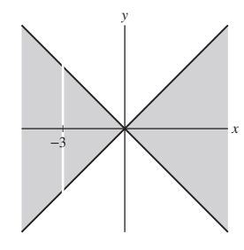
- (b) To find \( f(3, 1) \) we substitute \( x = 3 \), \( y = 1 \) in \( f(x, y) \). We get \[ f(3, 1) = \frac{\sqrt{3^2 - 1^2}}{3 + 3} = \frac{\sqrt{8}}{6} = \frac{\sqrt{2}}{3} \] Similarly, setting \( x = -5 \), \( y = -3 \), we get \[ f(-5, -3) = \frac{\sqrt{(-5)^2 - (-3)^2}}{-5 + 3} = \frac{\sqrt{16}}{-2} = -2. \]
- (c) We must find a point \( (x, y) \) such that \[ f(x, y) = \frac{\sqrt{x^2 - y^2}}{x + 3} = 1 \] We choose, for instance, \( y = 1 \), substitute and solve for \( x \). This gives \[ \frac{\sqrt{x^2 - 1^2}}{x + 3} = 1 \] \[ \sqrt{x^2 - 1} = x + 3 \] \[ x^2 - 1 = (x + 3)^2 = x^2 + 6x + 9 \] \[ 6x = -10 \Rightarrow x = -\frac{5}{3} \] Thus, the point \( \left(-\frac{5}{3}, 1\right) \) satisfies \( f\left(-\frac{5}{3}, 1\right) = 1 \).
- 02Chapter 4Find the domain and range of:
- \( f(x, y, z) = \sqrt{x - y} + \sqrt{y - z} \)
- \( f(x, y) = \ln(4x^2 - y) \)
Solution to exercise 2
- (a) \( f(x, y, z) \) is defined where the differences under the root signs are nonnegative. That is, \( x - y \geq 0 \) and \( y - z \geq 0 \). We solve the inequalities \[ x - y \geq 0 \Rightarrow y \leq x \] \[ y - z \geq 0 \Rightarrow y \geq z \] \[ \Rightarrow z \leq y \leq x \] The domain of \( f \) is the following set: \[ D = \{ (x, y, z) \mid z \leq y \leq x \} \] The range is the set of all nonnegative numbers.
- (b) \( f \) is defined when \( 4x^2 - y > 0 \) or \( y < 4x^2 \). The domain \( D \) is \( \{ (x, y) \mid y < 4x^2 \} \) is shown in the figure.
Since the logarithm function takes on all real values, the range of \(f\) is all real numbers.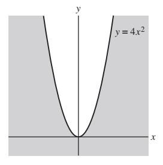
- 03Chapter 4Sketch the graph \( f(x, y) = x^2 - y + 1 \) and describe its vertical and horizontal traces.
Solution to exercise 3
The graph is shown in the following figure.The trace obtained by setting \( x = c \) is the line \( z = c^2 - y + 1 \) or \( z = (c^2 + 1) - y \) in the plane \( x = c \). The trace obtained by setting \( y = c \) is the parabola \( z = x^2 - c + 1 \) in the plane \( y = c \). The trace obtained by setting \( z = c \) is the parabola \( y = x^2 + 1 - c \) in the plane \( z = c \).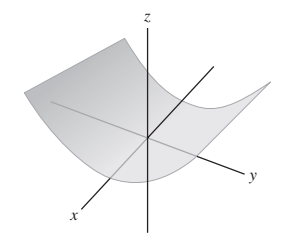
- 04Chapter 4
Omitted.
- 05Chapter 4Match the functions (a)--(d) with their graphs in Figure 1.
- \( f(x, y) = x^2 + y \)
- \( f(x, y) = x^2 + 4y^2 \)
- \( \displaystyle f(x, y) = \sin(4xy)e^{-x^2-y^2} \)
- \( \displaystyle f(x, y) = \sin(4x)e^{-x^2-y^2} \)
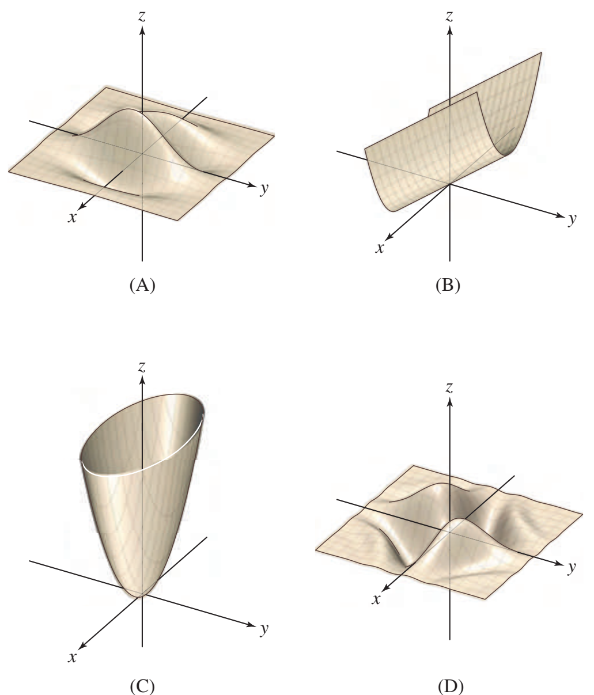
Figure 1 Solution to exercise 5
The function \( f = x^2 + y \) matches picture (b), as can be seen by taking the \( x = 0 \) slice. The function \( f = x^2 + 4y^2 \) matches picture (c), as can be seen by taking \( z = c \) slices (giving ellipses). Since \( \sin(4xy)e^{-x^2 - y^2} \) is symmetric with respect to \( x \) and \( y \), and so also is picture (d), we match \( \sin(4xy)e^{-x^2 - y^2} \) with (d). That leaves the third function, \( \sin(4x)e^{-x^2 - y^2} \), to match with picture (a). - 06Chapter 4Referring to the contour map in Figure 2:
- Estimate the average rate of change of elevation from \( A \) to \( B \) and from \( A \) to \( D \).
- Estimate the directional derivative at \( A \) in the direction of \( \mathbf{v} \).
- What are the signs of \( f_x \) and \( f_y \) at \( D \)?
- At which of the labeled points are both \( f_x \) and \( f_y \) negative?
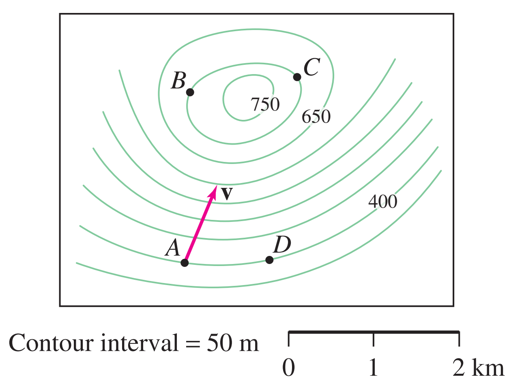
Figure 2 Solution to exercise 6
(a) From \( A \) to \( B \): The segment \( \overline{AB} \) spans 6 level curves and the contour interval is \( m = 50 \, \text{m} \), so the change of altitude is \( 6 \cdot 50 = 300 \, \text{m} \). From the horizontal scale of the contour map we see that the horizontal distance from \( A \) to \( B \) is 2 km or 2000 m. Therefore, \[ \text{Average ROC from } A \text{ to } B = \frac{\Delta \text{altitude}}{\Delta \text{horizontal distance}} = \frac{300}{2000} = 0.15 \] From \( A \) to \( D \): \( A \) and \( D \) lie on the same level curve, hence there is no change in altitude from \( A \) to \( D \). Therefore, \[ \text{Average ROC from } A \text{ to } D = \frac{0}{\Delta \text{horizontal distance}} = 0. \] (b) We first estimate the gradient at \( A \). We get \[ \frac{\partial f}{\partial x} \bigg|_A \approx \frac{\Delta f}{\Delta x} \approx \frac{0}{\Delta x} = 0 \quad \Rightarrow \quad \nabla f_A \approx (0, 0.25) \] \[ \frac{\partial f}{\partial y} \bigg|_A \approx \frac{\Delta f}{\Delta y} \approx \frac{50}{200} \approx 0.25 \] We estimate \( \mathbf{v} \) by \( \mathbf{v} \approx \left( \frac{4}{9}, 1 \right) \approx (0.44, 1) \), hence the cosine of the angle between \( \mathbf{v} \) and the gradient at \( A \) is \[ \cos \theta = \frac{\langle (0, 0.25) \cdot (0.44, 1) \rangle}{0.25 \cdot \sqrt{0.44^2 + 1}} = \frac{0.25}{0.25 \cdot 1.093} = 0.915 \] Hence, \[ D_{\mathbf{v}} f(A) = \|\nabla f_A \| \cos \theta = 0.25 \cdot 0.915 \approx 0.229. \] (Another method is to note that in the direction of \( \mathbf{v} \), we cross four contour lines in about 1000 meters; thus, the change of \( f \) in that direction is about \( 4 \cdot 50 / 1000 = 0.2 \).) (c) At \( D \), as we move east we are going downhill, towards lower contours, so that \( f_x \) is negative. As we move north, we are going uphill, towards higher contours, so that \( f_y \) is positive. (d) At \( A \), moving north is uphill, so that \( f_y \) is positive. At \( B \), moving east is uphill, so that \( f_x \) is positive. But at \( C \), moving east or moving north heads from the contour at 700 to the contour at 650, so that both \( f_x \) and \( f_y \) are negative. - 07Chapter 4Describe the level curves of:
- \(\displaystyle f(x, y) = e^{4x-y} \)
- \( f(x, y) = \ln(4x - y) \)
- \( f(x, y) = 3x^2 - 4y^2 \)
- \( f(x, y) = x + y^2 \)
Solution to exercise 7
(a) The level curves of \( f(x, y) = e^{4x - y} \) are the curves \( e^{4x - y} = c \) in the \( xy \)-plane, where \( c > 0 \). Taking \( \ln \) from both sides, we get \( 4x - y = \ln c \). Therefore, the level curves are the parallel lines of slope 4, \( 4x - y = \ln c \), \( c > 0 \), in the \( xy \)-plane. (b) The level curves of \( f(x, y) = \ln(4x - y) \) are the curves \( \ln(4x - y) = c \) in the \( xy \)-plane. We rewrite it as \( 4x - y = e^c \) to obtain the parallel lines of slope 4, with negative \( y \)-intercepts. (c) The level curves of \( f(x, y) = 3x^2 - 4y^2 \) are the hyperbolas \( 3x^2 - 4y^2 = c \) in the \( xy \)-plane. (d) The level curves of \( f(x, y) = x + y^2 \) are the curves \( x + y^2 = c \) or \( x = c - y^2 \) in the \( xy \)-plane. These are parabolas whose axis is the \( x \)-axis.For \(c=0\), the third family degenerates to the two lines \(y=\pm\frac{\sqrt3}{2}x\).
- 08Chapter 4Match each function (a)--(c) with its contour graph (i)--(iii) in Figure 3:
- \( f(x, y) = xy \)
- \( f(x, y) = e^{xy} \)
- \( f(x, y) = \sin(xy) \)
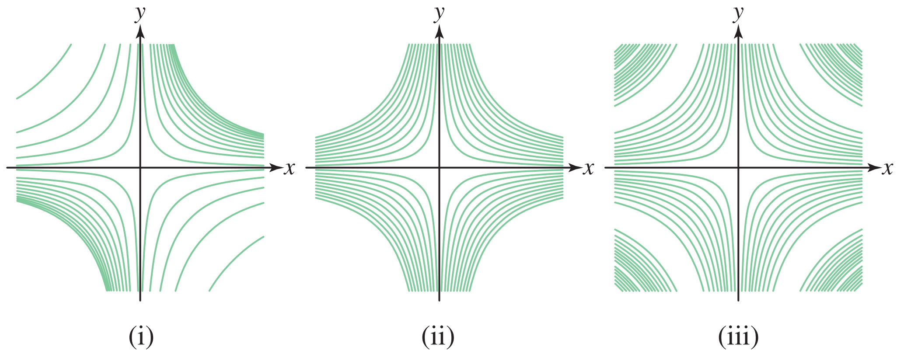
Figure 3 Solution to exercise 8
We find the level curves of the three functions: (a) The level curves of \( f(x, y) = xy \) are the curves \( xy = c \) in the \( xy \)-plane, where \( c \) is any real value. (b) The level curves of \( f(x, y) = e^{xy} \) are \( e^{xy} = c \) or \( xy = \ln c \), where \( c > 0 \). (c) The level curves of \( f(x, y) = \sin xy \) are \( \sin xy = c \) for \( |c| \leq 1 \), or \( xy = \sin^{-1} c + 2\pi k\ \text{or}\ xy=\pi-\sin^{-1}c+2\pi k \). The contour graphs corresponding to these functions are thus \[ \text{(a)} \rightarrow \text{(ii)} \] \[ \text{(b)} \rightarrow \text{(i)} \] \[ \text{(c)} \rightarrow \text{(iii)} \] Notice that the curves \( xy = \ln c \) become closer and closer when \( c \) increases, while the curves \( xy = c \) are equidistant for a certain contour interval. The contour map of (b) is in the first and third quadrants for \( c > 1 \), since then \( \ln c > 0 \).
Limits & continuity
9–15- 09Chapter 4\( \displaystyle \lim_{(x,y) \to (1,-3)} (xy + y^2)\)
Solution to exercise 9
The function \( f(x, y) = xy + y^2 \) is continuous everywhere because it is a polynomial, therefore we evaluate the limit using substitution: \[ \lim_{(x, y) \to (1, -3)} \left( xy + y^2 \right) = 1 \cdot (-3) + (-3)^2 = 6 \] - 10Chapter 4\( \displaystyle \lim_{(x,y) \to (1,-3)} \ln(3x + y)\)
Solution to exercise 10
Approaching \( (1, -3) \) along the ray \( y = -3 \), \( x > 1 \) gives \[ \lim_{x \to 1^+} \ln(3x - 3) = -\infty \] Therefore, \( f \) takes on arbitrarily small values at the intersection of every disk around the point \( (1, -3) \) with the domain of the function. This shows that \[ \lim_{(x, y) \to (1, -3)} \ln(3x + y) \text{ does not exist.} \]There is no finite real limit. In the extended-real sense, the limit is \(-\infty\): within the domain, \(3x+y\to0^+\).
- 11Chapter 4\( \displaystyle \lim_{(x,y) \to (0,0)} \frac{xy + xy^2}{x^2 + y^2}\)
Solution to exercise 11
We evaluate the limits as \( (x, y) \) approaches the origin along the lines \( y = x \) and \( y = 2x \): \[ \lim_{\substack{(x, y) \to (0, 0)\\\text{ along } y = x}} \frac{xy + xy^2}{x^2 + y^2} = \lim_{x \to 0} \frac{x \cdot x + x \cdot x^2}{x^2 + x^2} = \lim_{x \to 0} \frac{x^2 + x^3}{2x^2} = \lim_{x \to 0} \frac{1 + x}{2} = \frac{1}{2} \] \[ \lim_{\substack{x \to 0, (0, 0)\\\text{ along } y = 2x}} \frac{xy + xy^2}{x^2 + y^2} = \lim_{x \to 0} \frac{x \cdot 2x + x \cdot (2x)^2}{x^2 + (2x)^2} = \lim_{x \to 0} \frac{2x^2 + 4x^3}{5x^2} = \lim_{x \to 0} \frac{2 + 4x}{5} = \frac{2}{5} \] Since the two limits are different, \( f(x, y) \) does not approach one limit as \( (x, y) \to (0, 0) \), therefore the limit does not exist. - 12Chapter 4
Omitted.
- 13Chapter 4\( \displaystyle \lim_{(x,y) \to (1,-3)} (2x + y)e^{-x+y}\)
Solution to exercise 13
The function \( f(x, y) = (2x + y)e^{-x + y} \) is continuous, hence we evaluate the limit using substitution: \[ \lim_{(x, y) \to (1, -3)} (2x + y) e^{-x + y} = (2 \cdot 1 - 3)e^{-1 - 3} = -e^{-4} \] - 14Chapter 4\( \displaystyle \lim_{(x,y) \to (0,2)} \frac{(e^x - 1)(e^y - 1)}{x}\)
Solution to exercise 14
We have \[ \lim_{(x, y) \to (0, 2)} \frac{(e^x - 1)(e^y - 1)}{x} = \lim_{x \to 0} \frac{e^x - 1}{x} \lim_{y \to 2} (e^y - 1) = \left( e^2 - 1 \right) \lim_{x \to 0} \frac{e^x - 1}{x} \tag{1}\label{exam2-equation-1} \] By L'Hôpital's Rule, \[ \lim_{x \to 0} \frac{e^x - 1}{x} = \lim_{x \to 0} \frac{\frac{d}{dx}(e^x - 1)}{\frac{d}{dx}(x)} = \lim_{x \to 0} \frac{e^x}{1} = 1 \tag{2}\label{exam2-equation-2} \] Combining (1) and (2) we conclude that \[ \lim_{(x, y) \to (0, 2)} \frac{(e^x - 1)(e^y - 1)}{x} = \left( e^2 - 1 \right) \cdot 1 = e^2 - 1. \] - 15Chapter 4
Omitted.
Partial derivatives
16–22- 16Chapter 4Calculate \( f_x(1, 3) \) and \( f_y(1, 3) \) for \( f(x, y) = \sqrt{7x + y^2} \).
Solution to exercise 16
To calculate \( f_x(x, y) \) we treat \( y \) as a constant and use the Chain Rule. This gives \[ f_x(x, y) = \frac{\partial}{\partial x} \sqrt{7x + y^2} = \frac{1}{2\sqrt{7x + y^2}} \cdot \frac{\partial}{\partial x}(7x + y^2) = \frac{7}{2\sqrt{7x + y^2}} \] We compute \( f_y(x, y) \) similarly, treating \( x \) as a constant: \[ f_y(x, y) = \frac{\partial}{\partial y} \sqrt{7x + y^2} = \frac{1}{2\sqrt{7x + y^2}} \cdot \frac{\partial}{\partial y}(7x + y^2) = \frac{2y}{2\sqrt{7x + y^2}} = \frac{y}{\sqrt{7x + y^2}} \] At the point \( (1, 3) \) we have \[ f_x(1, 3) = \frac{7}{2\sqrt{7 \cdot 1 + 3^2}} = \frac{7}{2 \cdot 4} = \frac{7}{8} \] \[ f_y(1, 3) = \frac{3}{\sqrt{7 \cdot 1 + 3^2}} = \frac{3}{4} \]
In Exercises 17–20, compute \(f_x\) and \(f_y\).
- 17Chapter 4\( f(x, y) = 2x + y^2 \)
Solution to exercise 17
To find \( f_x \) we treat \( y \) as a constant, and to find \( f_y \) we treat \( x \) as a constant. We get \[ f_x = \frac{\partial}{\partial x} \left( 2x + y^2 \right) = \frac{\partial}{\partial x} \left( 2x \right) + \frac{\partial}{\partial x} \left( y^2 \right) = 2 + 0 = 2 \] \[ f_y = \frac{\partial}{\partial y} \left( 2x + y^2 \right) = \frac{\partial}{\partial y} \left( 2x \right) + \frac{\partial}{\partial y} \left( y^2 \right) = 0 + 2y = 2y \] - 18Chapter 4\( f(x, y) = 4xy^3 \)
Solution to exercise 18
We compute \( f_x \), treating \( y \) as a constant: \[ f_x = \frac{\partial}{\partial x} (4xy^3) = 4y^3 \frac{\partial}{\partial x} (x) = 4y^3 \cdot 1 = 4y^3 \] We compute \( f_y \), treating \( x \) as a constant: \[ f_y = \frac{\partial}{\partial y} (4xy^3) = 4x \cdot \frac{\partial}{\partial y} (y^3) = 4x \cdot 3y^2 = 12xy^2 \] - 19Chapter 4\( f(x, y) = \sin(xy)e^{-x-y} \)
Solution to exercise 19
We compute \( f_x \), treating \( y \) as a constant and using the Product Rule and the Chain Rule. We get \[ f_x = \frac{\partial}{\partial x} \left( \sin(xy) e^{-x-y} \right) = \frac{\partial}{\partial x} \left( \sin(xy) \right) e^{-x-y} + \sin(xy) \frac{\partial}{\partial x} \left( e^{-x-y} \right) \] \[ = \cos(xy) \cdot y e^{-x-y} + \sin(xy) \cdot (-1) e^{-x-y} = e^{-x-y} \left( y \cos(xy) - \sin(xy) \right) \] We compute \( f_y \) similarly, treating \( x \) as a constant. Notice that since \( f(y, x) = f(x, y) \), the partial derivative \( f_y \) can be obtained from \( f_x \) by interchanging \( x \) and \( y \). That is, \[ f_y = e^{-x-y} \left( x \cos(xy) - \sin(xy) \right). \] - 20Chapter 4\( f(x, y) = \ln(x^2 + xy^2) \)
Solution to exercise 20
Using the Chain Rule we obtain \[ f_x = \frac{\partial}{\partial x} \ln \left( x^2 + xy^2 \right) = \frac{1}{x^2 + xy^2} \frac{\partial}{\partial x} \left( x^2 + xy^2 \right) = \frac{1}{x^2 + xy^2} \cdot \left( 2x + y^2 \right) = \frac{2x + y^2}{x^2 + xy^2} \] \[ f_y = \frac{\partial}{\partial y} \ln \left( x^2 + xy^2 \right) = \frac{1}{x^2 + xy^2} \frac{\partial}{\partial y} \left( x^2 + xy^2 \right) = \frac{1}{x^2 + xy^2} \cdot \left( 2xy \right) = \frac{2xy}{x^2 + xy^2} \] - 21Chapter 4Calculate \( f_{xxyz} \) for \( f(x, y, z) = y \sin(x + z) \).
Solution to exercise 21
We differentiate \( f \) twice with respect to \( x \), once with respect to \( y \), and finally with respect to \( z \). This gives \[ f_x = \frac{\partial}{\partial x} \left( y \sin(x + z) \right) = y \cos(x + z) \] \[ f_{xx} = \frac{\partial}{\partial x} \left( y \cos(x + z) \right) = -y \sin(x + z) \] \[ f_{xxy} = \frac{\partial}{\partial y} \left( -y \sin(x + z) \right) = -\sin(x + z) \] \[ f_{xxyz} = \frac{\partial}{\partial z} \left( -\sin(x + z) \right) = -\cos(x + z) \] - 22Chapter 4Fix \( c > 0 \). Show that for any constants \( \alpha, \beta \), the function \( u(t, x) = \sin(\alpha ct + \beta) \sin(\alpha x) \) satisfies the wave equation \[ \frac{\partial^2 u}{\partial t^2} = c^2 \frac{\partial^2 u}{\partial x^2} \]
Solution to exercise 22
We compute the partial derivatives \( u_t \) and \( u_x \) using the Chain Rule: \[ u_t = \frac{\partial}{\partial t} \left( \sin(\alpha ct + \beta) \sin(\alpha x) \right) = \sin(\alpha x) \frac{\partial}{\partial t} \left( \sin(\alpha ct + \beta) \right) = \sin(\alpha x) \cos(\alpha ct + \beta) \cdot \alpha c \] \[ u_x = \frac{\partial}{\partial x} \left( \sin(\alpha ct + \beta) \sin(\alpha x) \right) = \sin(\alpha ct + \beta) \frac{\partial}{\partial x} \left( \sin(\alpha x) \right) = \sin(\alpha ct + \beta) \cos(\alpha x) \cdot \alpha \] We find \( u_{tt} \) and \( u_{xx} \), differentiating \( u_t \) and \( u_x \) with respect to \( t \) and \( x \), respectively: \[ u_{tt} = \alpha c \sin(\alpha x) \frac{\partial}{\partial t} \left( \cos(\alpha ct + \beta) \right) = -\alpha^2 c^2 \sin(\alpha x) \sin(\alpha ct + \beta) \] \[ u_{xx} = \alpha \sin(\alpha ct + \beta) \frac{\partial}{\partial x} \left( \cos(\alpha x) \right) = -\alpha^2 \sin(\alpha ct + \beta) \sin(\alpha x) \] We see that \( u_{tt} = c^2 u_{xx} \).
Tangent planes & linear approximation
23–28- 23Chapter 4Find an equation of the tangent plane to the graph of \( f(x, y) = xy^2 - xy + 3x^3y \) at \( P(1, 3) \).
Solution to exercise 23
The tangent plane has the equation \[ z = f(1, 3) + f_x(1, 3)(x - 1) + f_y(1, 3)(y - 3) \tag{1}\label{exam2-equation-3} \] We compute the partial derivatives of \( f(x, y) = xy^2 - xy + 3x^3y \): \[ f_x(x, y) = y^2 - y + 9x^2 y \quad f_x(1, 3) = 3^2 - 3 + 9 \cdot 1^2 \cdot 3 = 33 \] \[ f_y(x, y) = 2xy - x + 3x^3 \quad f_y(1, 3) = 2 \cdot 1 \cdot 3 - 1 + 3 \cdot 1^3 = 8 \] Also, \( f(1, 3) = 1 \cdot 3^2 - 1 \cdot 3 + 3 \cdot 1^3 \cdot 3 = 15 \). Substituting these values in (1), we obtain the following equation: \[ z = 15 + 33(x - 1) + 8(y - 3) \] or \[ z = 33x + 8y - 42 \] - 24Chapter 4Suppose that \( f(4, 4) = 3 \) and \( f_x(4, 4) = f_y(4, 4) = -1 \). Use the linear approximation to estimate \( f(4.1, 4) \) and \( f(3.88, 4.03) \).
Solution to exercise 24
The linear approximation is \[ f(a + h, b + k) \approx f(a, b) + f_x(a, b)h + f_y(a, b)k \] We use the linear approximation at the point \( (4, 4) \). Therefore, estimating \( f(3.88, 4.03) \), \[ h = 3.88 - 4 = -0.12 \quad \text{and} \quad k = 4.03 - 4 = 0.03 \] \[ f(3.88, 4.03) \approx f(4, 4) + f_x(4, 4)(-0.12) + f_y(4, 4) \cdot 0.03 \] \[ f(3.88, 4.03) \approx 3 - 1 \cdot (-0.12) - 1 \cdot 0.03 = 3.09 \] Estimating \( f(4.1, 4) \), \[ h = 4.1 - 4 = 0.1 \quad \text{and} \quad k = 4 - 4 = 0 \] \[ f(4.1, 4) \approx f(4, 4) + f_x(4, 4)(0.1) + f_y(4, 4) \cdot 0 \] \[ f(4.1, 4) \approx 3 - 1 \cdot (0.1) - 1 \cdot 0 = 2.9 \] We obtain the estimations \( f(3.88, 4.03) \approx 3.09 \) and \( f(4.1, 4) \approx 2.9 \). - 25Chapter 4Use a linear approximation of \( f(x, y, z) = \sqrt{x^2 + y^2 + z} \) to estimate \( \sqrt{7.1^2 + 4.9^2 + 69.5} \). Compare with a calculator value.
Solution to exercise 25
The function whose value we want to approximate is \[ f(x, y, z) = \sqrt{x^2 + y^2 + z} \] We will use the linear approximation at the point \( (7, 5, 70) \). Recall that the linear approximation to a surface will be: \[ L(x, y, z) = f(7, 5, 70) + f_x(7, 5, 70)(x - 7) + f_y(7, 5, 70)(y - 5) + f_z(7, 5, 70)(z - 70) \] We compute the partial derivatives of \( f \): \[ f_x(x, y, z) = \frac{2x}{2\sqrt{x^2 + y^2 + z}} = \frac{x}{\sqrt{x^2 + y^2 + z}} \quad \Rightarrow \quad f_x(7, 5, 70) = \frac{7}{\sqrt{7^2 + 5^2 + 70}} = \frac{7}{12} \] \[ f_y(x, y, z) = \frac{2y}{2\sqrt{x^2 + y^2 + z}} = \frac{y}{\sqrt{x^2 + y^2 + z}} \quad \Rightarrow \quad f_y(7, 5, 70) = \frac{5}{\sqrt{7^2 + 5^2 + 70}} = \frac{5}{12} \] \[ f_z(x, y, z) = \frac{1}{2\sqrt{x^2 + y^2 + z}} \quad \Rightarrow \quad f_z(7, 5, 70) = \frac{1}{2\sqrt{7^2 + 5^2 + 70}} = \frac{1}{24} \] Also, \( f(7, 5, 70) = \sqrt{7^2 + 5^2 + 70} = 12 \). Substituting the values in the linear approximation equation, we obtain the following approximation: \[ L(x, y, z) = 12 + \frac{7}{12}(x - 7) + \frac{5}{12}(y - 5) + \frac{1}{24}(z - 70) \] Now we are ready to approximate \( \sqrt{7.1^2 + 4.9^2 + 69.5} \). That is, using the linear approximation, \[ L(7.1, 4.9, 69.5) = 12 + \frac{7}{12}(7.1 - 7) + \frac{5}{12}(4.9 - 5) + \frac{1}{24}(69.5 - 70) \] \[ = 12 + \frac{7}{12} \cdot 0.1 + \frac{5}{12} \cdot (-0.1) + \frac{1}{24} \cdot (-0.5) \] \[ = 12 + \frac{7}{120} - \frac{5}{120} - \frac{1}{48} \] \[ = 12 + \frac{2}{120} - \frac{1}{48} = 12 + \frac{1}{60} - \frac{1}{48} = \frac{2879}{240} = 11.9958333 \] The value obtained using a calculator is 11.996667. - 26Chapter 4The plane \( z = 2x - y - 1 \) is tangent to the graph of \( z = f(x, y) \) at \( P = (5, 3) \).
- Determine \( f(5, 3), f_x(5, 3), \) and \( f_y(5, 3) \).
- Approximate \( f(5.2, 2.9) \).
Solution to exercise 26
The tangent plane determines the function value and its partial derivatives at the specified point; it does not determine them everywhere.
\[ f(5,3)=6,\qquad f_x(5,3)=2,\qquad f_y(5,3)=-1. \]\[ L(x,y)=6+2(x-5)-(y-3),\qquad f(5.2,2.9)\approx6+0.4+0.1=6.5. \] - 27Chapter 4Figure 4 shows the contour map of a function \( f(x, y) \) together with a path \( \mathbf{r} (t) \) in the counterclockwise direction. The points \( \mathbf{r}(1) \), \( \mathbf{r}(2) \), and \( \mathbf{r}(3) \) are indicated on the path. Let \( g(t) = f(\mathbf{r}(t)) \). Which of statements (i)--(iv) are true? Explain.
- \( g'(1) > 0 \).
- \( g(t) \) has a local minimum for some \( 1 \leq t \leq 2 \).
- \( g'(2) = 0 \).
- \( g'(3) = 0 \).
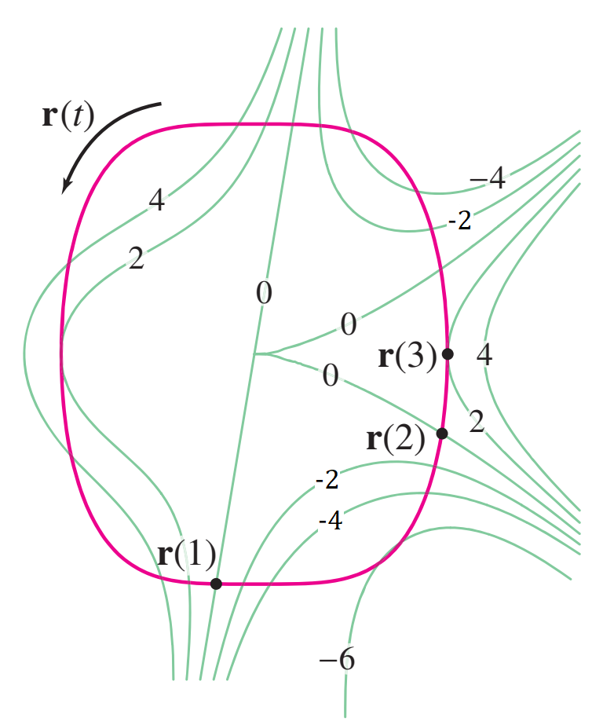
Figure 4 Solution to exercise 27
(ii) and (iv) are true. - 28Chapter 4Jason earns \( \displaystyle S(h, c) = 20h \left(1 + \frac{c}{100}\right)^{1.5} \) dollars per month at a used car lot, where \( h \) is the number of hours worked and \( c \) is the number of cars sold. He has already worked 160 hours and sold 69 cars. Right now Jason wants to go home but wonders how much more he might earn if he stays another 10 minutes with a customer who is considering buying a car. Use the linear approximation to estimate how much extra money Jason will earn if he sells his 70th car during these 10 minutes.
Solution to exercise 28
We estimate the money earned in staying for \( \frac{1}{6} \) hour more and selling one more car, using the linear approximation: \[ \Delta S \approx S_h(a, b) \Delta h + S_c(a, b) \Delta c \tag{1}\label{exam2-equation-4} \] By the given information, \( a = 160 \), \( b = 69 \), \( \Delta h = \frac{1}{6} \), and \( \Delta c = 1 \). We compute the partial derivative of the function: \[ S(h, c) = 20h \left( 1 + \frac{c}{100} \right)^{1.5} \] \[ S_h(h, c) = 20 \left( 1 + \frac{c}{100} \right)^{1.5} \quad \Rightarrow \quad S_h(160, 69) = 43.94 \] \[ S_c(h, c) = 20h \cdot 1.5 \left( 1 + \frac{c}{100} \right)^{0.5} \cdot \frac{1}{100} = 0.3h \left( 1 + \frac{c}{100} \right)^{0.5} \quad \Rightarrow \quad S_c(160, 69) = 62.4 \] Substituting the values in (1), we get the following approximation: \[ \Delta S = S_h(160, 69) \cdot \frac{1}{6} + S_c(160, 69) \cdot 1 = 43.94 \cdot \frac{1}{6} + 62.4 \approx 69.72 \] We see that Jason will make approximately $69.72 more if he sells his 70th car during 10 minutes.
Derivatives along curves
29–32In Exercises 29–32, compute \(\frac{d}{dt}f(\mathbf r(t))\) at the given value of \(t\). In 33–36, compute the directional derivative at \(P\) using the unit vector in the direction of \(\mathbf v\).
- 29Chapter 4\( f(x, y) = x + e^y \), \( \mathbf{r}(t) = \left\langle 3t - 1, t^2 \right\rangle \) at \( t = 2 \)
Solution to exercise 29
By the Chain Rule we have \[ \frac{d}{dt} f(\mathbf{r}(t)) = \nabla f \cdot \mathbf{r}'(t) \tag{1}\label{exam2-equation-5} \] We evaluate the gradient \( \nabla f \) and \( \mathbf{r}'(t) \): \[ \mathbf{r}'(t) = \left\langle 3, 2t \right\rangle \] \[ \nabla f = \langle f_x, f_y \rangle = \langle 1, e^y \rangle \quad \Rightarrow \quad \nabla f(\mathbf{r}(t)) = \langle 1, e^{t^2} \rangle \] Substituting in (1) we get \[ \frac{d}{dt} f(\mathbf{r}(t)) = \langle 1, e^{t^2} \rangle \cdot (3, 2t) = 3 + 2te^{t^2} \] At \( t = 2 \) we have \[ \frac{d}{dt} f(\mathbf{r}(t)) \bigg|_{t=2} = 3 + 2 \cdot 2 \cdot e^{2^2} = 3 + 4e^4 \approx 221.4 \] - 30Chapter 4\( f(x, y, z) = xz - y^2 \), \( \mathbf{r}(t) = \left\langle t, t^3, 1 - t \right\rangle \) at \( t = -2 \)
Solution to exercise 30
We use the Chain Rule: \[ \frac{d}{dt} f(\mathbf{r}(t)) = \nabla f_{\mathbf{r}(t)} \cdot \mathbf{r}'(t) \tag{1}\label{exam2-equation-6} \] We compute the gradient of \( f \): \[ \nabla f = \left\langle \frac{\partial f}{\partial x}, \frac{\partial f}{\partial y}, \frac{\partial f}{\partial z} \right\rangle = \langle z, -2y, x \rangle \] On the path, \( x = t \), \( y = t^3 \), and \( z = 1 - t \). Therefore, \[ \nabla f_{\mathbf{r}(t)} = \langle 1 - t, -2t^3, t \rangle \] Also, \( \mathbf{r}'(t) = \langle 1, 3t^2, -1 \rangle \), hence by (1) we obtain \[ \frac{d}{dt} f(\mathbf{r}(t)) = \langle 1 - t, -2t^3, t \rangle \cdot \langle 1, 3t^2, -1 \rangle = 1 - t + 3t^2(-2t^3) - t = -6t^5 - 2t + 1 \] At \( t = -2 \), we get \[ \frac{d}{dt} f(\mathbf{r}(t)) \bigg|_{t=-2} = -6(-2)^5 - 2(-2) + 1 = 197 \] - 31Chapter 4\( f(x, y) = xe^{3y} - ye^{3x} \), \( \mathbf{r}(t) = \left\langle e^t, \ln t \right\rangle \) at \( t = 1 \)
Solution to exercise 31
We use the Chain Rule: \[ \frac{d}{dt} f(\mathbf{r}(t)) = \nabla f_{\mathbf{r}(t)} \cdot \mathbf{r}'(t) \tag{1}\label{exam2-equation-7} \] We find the \( \nabla f \) at the point \( \mathbf{r}(1) \) and compute \( \mathbf{r}'(1) \). We get \[ \nabla f = \langle f_x, f_y \rangle = \left\langle e^{3y} - 3ye^{3x}, 3xe^{3y} - e^{3x} \right\rangle \] \[ \mathbf{r}(1) = \langle e^1, \ln 1 \rangle = \langle e, 0 \rangle \] \[ \nabla f_{\mathbf{r}(1)} = \left\langle e^{3\cdot 0} - 3 \cdot 0 \cdot e^{3e}, 3e e^{3 \cdot 0} - e^{3e} \right\rangle = \langle 1, 3e - e^{3e} \rangle \tag{2}\label{exam2-equation-8} \] \[ \mathbf{r}'(t) = \frac{d}{dt} \langle e^t, \ln t \rangle = \langle e^t, t^{-1} \rangle \quad \Rightarrow \quad \mathbf{r}'(1) = \langle e, 1 \rangle \tag{3}\label{exam2-equation-9} \] Substituting (2) and (3) in (1) gives \[ \frac{d}{dt} f(\mathbf{r}(t)) \bigg|_{t=1} = \nabla f_{\mathbf{r}(1)} \cdot \mathbf{r}'(1) = \langle 1, 3e - e^{3e} \rangle \cdot \langle e, 1 \rangle = e + 3e - e^{3e} = 4e - e^{3e} \] - 32Chapter 4\( \displaystyle f(x, y) = \tan^{-1} \left(\frac{y}{x}\right) \), \( \mathbf{r}(t) = \left\langle \cos t, \sin t \right\rangle \) at \( t = \frac{\pi}{3} \)
Solution to exercise 32
We use the Chain Rule. We have \[ \nabla f = \left\langle \frac{\partial f}{\partial x}, \frac{\partial f}{\partial y} \right\rangle = \left\langle \frac{\frac{-y}{x^2}}{1 + \left( \frac{y}{x} \right)^2}, \frac{\frac{1}{x}}{1 + \left( \frac{y}{x} \right)^2} \right\rangle = \left\langle \frac{-y}{x^2 + y^2}, \frac{x}{x^2 + y^2} \right\rangle \] On the path, \( x = \cos t \) and \( y = \sin t \). Therefore, \[ \nabla f_{\mathbf{r}(t)} = \left\langle \frac{-\sin t}{\cos^2 t + \sin^2 t}, \frac{\cos t}{\cos^2 t + \sin^2 t} \right\rangle = \langle -\sin t, \cos t \rangle \] \[ \mathbf{r}'(t) = \langle -\sin t, \cos t \rangle \] At the point \( t = \frac{\pi}{3} \) we have \[ \nabla f_{\mathbf{r}\left( \frac{\pi}{3} \right)} = \left\langle -\sin \frac{\pi}{3}, \cos \frac{\pi}{3} \right\rangle = \left\langle -\frac{\sqrt{3}}{2}, \frac{1}{2} \right\rangle \] and \[ \mathbf{r}'\left( \frac{\pi}{3} \right) = \left\langle -\sin \frac{\pi}{3}, \cos \frac{\pi}{3} \right\rangle = \left\langle -\frac{\sqrt{3}}{2}, \frac{1}{2} \right\rangle \] Therefore, \[ \frac{d}{dt} f(\mathbf{r}(t)) \bigg|_{t=\frac{\pi}{3}} = \nabla f_{\mathbf{r}\left( \frac{\pi}{3} \right)} \cdot \mathbf{r}'\left( \frac{\pi}{3} \right) = \left\langle -\frac{\sqrt{3}}{2}, \frac{1}{2} \right\rangle \cdot \left\langle -\frac{\sqrt{3}}{2}, \frac{1}{2} \right\rangle = \frac{3}{4} + \frac{1}{4} = 1 \]
Gradients & directional derivatives
33–39- 33Chapter 4\( f(x, y) = x^3 y^4 \), \( P(3, -1) \), \( \mathbf{v} = 2 \mathbf{i} + \mathbf{j} \)
Solution to exercise 33
We first normalize \(\mathbf{v}\) to find a unit vector \(\mathbf{u}\) in the direction of \(\mathbf{v}\): \[ \mathbf{u} = \frac{\mathbf{v}}{\|\mathbf{v}\|} = \frac{2\mathbf{i} + \mathbf{j}}{\sqrt{2^2 + 1^2}} = \frac{2}{\sqrt{5}} \mathbf{i} + \frac{1}{\sqrt{5}} \mathbf{j} \] We compute the directional derivative using the following equality: \[ D_{\mathbf{u}} f(3, -1) = \nabla f(3, -1) \cdot \mathbf{u} \] The gradient vector at the given point is the following vector: \[ \nabla f = \langle f_x, f_y \rangle = \langle 3x^2y^4, 4x^3y^3 \rangle \quad \Rightarrow \quad \nabla f(3, -1) = \langle 27, -108 \rangle \] Hence, \[ D_{\mathbf{u}} f(3, -1) = \langle 27, -108 \rangle \cdot \left\langle \frac{2}{\sqrt{5}}, \frac{1}{\sqrt{5}} \right\rangle = \frac{54}{\sqrt{5}} + \frac{-108}{\sqrt{5}} = \frac{-54}{\sqrt{5}} \] - 34Chapter 4\( f(x, y, z) = zx - xy^2 \), \( P(1, 1, 1) \), \( \mathbf{v} = \left\langle 2, -1, 2 \right\rangle \)
Solution to exercise 34
We first normalize \(\mathbf{v}\) to obtain a unit vector \(\mathbf{u}\) in the direction of \(\mathbf{v}\): \[ \mathbf{u} = \frac{\langle 2, -1, 2 \rangle}{\sqrt{2^2 + (-1)^2 + 2^2}} = \left\langle \frac{2}{3}, \frac{-1}{3}, \frac{2}{3} \right\rangle \] We compute the directional derivative using the following equality: \[ D_{\mathbf{u}} f(1, 1, 1) = \nabla f(1,1,1) \cdot \mathbf{u} \] The gradient vector at the point \((1, 1, 1)\) is the following vector: \[ \nabla f = \langle f_x, f_y, f_z \rangle = \langle z - y^2, -2xy, x \rangle \quad \Rightarrow \quad \nabla f(1,1,1) = \langle 0, -2, 1 \rangle \] Hence, \[ D_{\mathbf{u}} f(1, 1, 1) = \langle 0, -2, 1 \rangle \cdot \left\langle \frac{2}{3}, \frac{-1}{3}, \frac{2}{3} \right\rangle = 0 + \frac{2}{3} + \frac{2}{3} = \frac{4}{3} \] - 35Chapter 4\( f(x, y) = e^{x^2+y^2} \), \( P \left(\frac{\sqrt{2}}{2}, \frac{\sqrt{2}}{2}\right) \), \( \mathbf{v} = \langle 3, -4 \rangle \)
Solution to exercise 35
\[ \mathbf u=\frac{1}{5}\langle3,-4\rangle,\qquad\nabla f=2e^{x^2+y^2}\langle x,y\rangle. \]\[ \nabla f(P)=e\sqrt2\langle1,1\rangle,\qquad D_{\mathbf u}f(P)=\frac{e\sqrt2}{5}(3-4)=-\frac{e\sqrt2}{5}. \] - 36Chapter 4\( f(x, y, z) = \sin(xy + z) \), \( P(0, 0, 0) \), \( \mathbf{v} = \mathbf{j} + \mathbf{k} \)
Solution to exercise 36
We normalize \(\mathbf{v}\) to obtain a vector \(\mathbf{u}\) in the direction of \(\mathbf{v}\): \[ \mathbf{u} = \frac{1}{\sqrt{0^2 + 1^2 + 1^2}} \cdot \langle 0, 1, 1 \rangle = \frac{1}{\sqrt{2}} \langle 0, 1, 1 \rangle \] \[ D_{\mathbf{v}} f(P) = \nabla f_P \cdot \mathbf{u} \tag{1}\label{exam2-equation-10} \] We compute the gradient vector: \[ \nabla f = \left\langle \frac{\partial f}{\partial x}, \frac{\partial f}{\partial y}, \frac{\partial f}{\partial z} \right\rangle = \langle y \cos(xy + z), x \cos(xy + z), \cos(xy + z) \rangle \] Hence, \[ \nabla f_P = \langle 0, 0, 1 \rangle \] By (1) we conclude that \[ D_{\mathbf{v}} f(P) = \nabla f_P \cdot \mathbf{u} = \langle 0, 0, 1 \rangle \cdot \frac{1}{\sqrt{2}} \langle 0, 1, 1 \rangle = \frac{1}{\sqrt{2}}. \] - 37Chapter 4Find the unit vector \( \mathbf{e} \) at \( P(0, 0, 1) \) pointing in the direction along which \( f(x, y, z) = xz + e^{-x^2+y} \) increases most rapidly.
Solution to exercise 37
The gradient vector \(\nabla f_P\) points in the direction of maximum rate of increase of \(f\). Therefore, we need to find a unit vector in the direction of \(\nabla f_P\). We first find the gradient of \(f(x, y, z) = xz + e^{-x^2+y}\): \[ \nabla f = \left\langle \frac{\partial f}{\partial x}, \frac{\partial f}{\partial y}, \frac{\partial f}{\partial z} \right\rangle = \left\langle z - 2xe^{-x^2+y}, e^{-x^2+y}, x \right\rangle \] At the point \(P = (0, 0, 1)\) we have \[ \nabla f_P = \langle 1, 1, 0 \rangle. \] We normalize \(\nabla f_P\) to obtain the unit vector \(\mathbf{e}\) at \(P\) pointing in the direction of maximum increase of \(f\): \[ \mathbf{e} = \frac{\nabla f_P}{\|\nabla f_P\|} = \left\langle \frac{1}{\sqrt{2}}, \frac{1}{\sqrt{2}}, 0 \right\rangle. \] - 38Chapter 4Find an equation of the tangent plane at \( P(0, 3, -1) \) to the surface with equation \[ z e^x + e^{z+1} = xy + y - 3 \]
Solution to exercise 38
The surface is defined implicitly by the equation \[ F(x, y, z) = z e^x + e^{z+1} - x y - y + 3. \] The tangent plane to the surface at the point \((0, 3, -1)\) has the following equation: \[ 0 = F_x(0, 3, -1)x + F_y(0, 3, -1)(y - 3) + F_z(0, 3, -1)(z + 1) \tag{1}\label{exam2-equation-11} \] We compute the partial derivatives at the given point: \[ F_x(x, y, z) = z e^x - y \quad \Rightarrow \quad F_x(0, 3, -1) = -1 e^0 - 3 = -4, \] \[ F_y(x, y, z) = -x - 1 \quad \Rightarrow \quad F_y(0, 3, -1) = -0 - 1 = -1, \] \[ F_z(x, y, z) = e^x + e^{z+1} \quad \Rightarrow \quad F_z(0, 3, -1) = e^0 + e^{-1+1} = 2. \] Substituting in (1) we obtain the following equation: \[ -4x - (y - 3) + 2(z + 1) = 0, \] \[ -4x - y + 2z + 5 = 0. \] Simplifying: \[ 2z = 4x + y - 5 \quad \Rightarrow \quad z = 2x + \frac{y}{2} - \frac{5}{2}. \] - 39Chapter 4Let \( n \neq 0 \) be an integer and \( r \) an arbitrary constant. Show that the tangent plane to the surface \( x^n + y^n + z^n = r \) at \( P = (a, b, c) \) has equation \( a^{n-1}x + b^{n-1}y + c^{n-1}z = r \)
Solution to exercise 39
The tangent plane to the surface, defined implicitly by \(F(x, y, z) = r\) at a point \((a, b, c)\) on the surface, has the following equation: \[ 0 = F_x(a, b, c)(x - a) + F_y(a, b, c)(y - b) + F_z(a, b, c)(z - c) \tag{1}\label{exam2-equation-12} \] The given surface is defined by the function \(F(x, y, z) = x^n + y^n + z^n\). We find the partial derivative of \(F\) at a point \(P = (a, b, c)\) on the surface: \[ F_x(x, y, z) = nx^{n-1} \quad \Rightarrow \quad F_x(a, b, c) = na^{n-1}, \] \[ F_y(x, y, z) = ny^{n-1} \quad \Rightarrow \quad F_y(a, b, c) = nb^{n-1}, \] \[ F_z(x, y, z) = nz^{n-1} \quad \Rightarrow \quad F_z(a, b, c) = nc^{n-1}. \] Substituting in (1) we get: \[ na^{n-1}(x - a) + nb^{n-1}(y - b) + nc^{n-1}(z - c) = 0. \] We divide by \(n\) and simplify: \[ a^{n-1} x - a^n + b^{n-1} y - b^n + c^{n-1} z - c^n = 0 \] \[ a^{n-1} x + b^{n-1} y + c^{n-1} z = a^n + b^n + c^n \tag{2}\label{exam2-equation-13} \] The point \(P = (a, b, c)\) lies on the surface, hence it satisfies the equation of the surface. That is, \[ a^n + b^n + c^n = r \] Substituting in (2) we obtain the following equation of the tangent plane: \[ a^{n-1} x + b^{n-1} y + c^{n-1} z = r \]This formula assumes a regular point: \(\nabla F(P)\ne\mathbf0\). For negative \(n\), all coordinates must also be nonzero. At singular points the asserted tangent-plane formula need not apply.
Chain rule & implicit differentiation
40–45- 40Chapter 4Let \( f(x, y) = (x - y)e^x \). Use the Chain Rule to calculate \( \displaystyle \frac{\partial f}{\partial u} \) and \( \displaystyle \frac{\partial f}{\partial v} \) (in terms of \( u \) and \( v \)), where \( x = u - v \) and \( y = u + v \).
Solution to exercise 40
First we calculate the first partial derivatives: \[ \frac{\partial f}{\partial x} = e^x(x - y) + e^x = e^x(x - y + 1), \quad \frac{\partial f}{\partial y} = -e^x \] Since \(\frac{\partial x}{\partial u} = 1, \frac{\partial y}{\partial u} = 1, \frac{\partial x}{\partial v} = -1, \frac{\partial y}{\partial v} = 1\), the Chain Rule gives: \[ \frac{\partial f}{\partial u} = \frac{\partial f}{\partial x} \frac{\partial x}{\partial u} + \frac{\partial f}{\partial y} \frac{\partial y}{\partial u} = e^x(x - y + 1) \cdot 1 - e^x \cdot 1 = e^x(x - y + 1 - 1) = e^x(x - y) \] \[ \frac{\partial f}{\partial v} = \frac{\partial f}{\partial x} \frac{\partial x}{\partial v} + \frac{\partial f}{\partial y} \frac{\partial y}{\partial v} = e^x(x - y + 1) \cdot (-1) - e^x \cdot 1 = e^x(y - x - 2) \] We now substitute \(x = u - v\) and \(y = u + v\) to express the partial derivatives in terms of \(u\) and \(v\). We get: \[ \frac{\partial f}{\partial u} = e^{u-v}(u - v - u - v) = -2v e^{u-v} \] \[ \frac{\partial f}{\partial v} = e^{u-v}(u + v - u + v - 2) = 2 e^{u-v}(v - 1) \] - 41Chapter 4Let \( f(x, y, z) = x^2y + y^2z \). Use the Chain Rule to calculate \( \displaystyle \frac{\partial f}{\partial s} \) and \( \displaystyle \frac{\partial f}{\partial t} \) (in terms of \( s \) and \( t \)), where \( x = s + t \), \( y = st \), \( z = 2s - t \).
Solution to exercise 41
We compute the first partial derivatives: \[ \frac{\partial f}{\partial x} = 2xy, \qquad \frac{\partial f}{\partial y} = x^2 + 2yz, \qquad \frac{\partial f}{\partial z} = y^2 \] Since \(\displaystyle \frac{\partial x}{\partial s} = 1\), \(\displaystyle \frac{\partial y}{\partial s} = t\), \(\displaystyle \frac{\partial z}{\partial s} = 2\), \(\displaystyle \frac{\partial x}{\partial t} = 1\), \(\displaystyle \frac{\partial y}{\partial t} = s\), and \(\displaystyle \frac{\partial z}{\partial t} = -1\), the Chain Rule gives \[ \frac{\partial f}{\partial s} = \frac{\partial f}{\partial x}\frac{\partial x}{\partial s} + \frac{\partial f}{\partial y}\frac{\partial y}{\partial s} + \frac{\partial f}{\partial z}\frac{\partial z}{\partial s} = 2xy \cdot 1 + (x^2 + 2yz)t + y^2 \cdot 2 \] \[ = 2xy + (x^2 + 2yz)t + 2y^2 \] \[ \frac{\partial f}{\partial t} = \frac{\partial f}{\partial x}\frac{\partial x}{\partial t} + \frac{\partial f}{\partial y}\frac{\partial y}{\partial t} + \frac{\partial f}{\partial z}\frac{\partial z}{\partial t} = 2xy \cdot 1 + (x^2 + 2yz)s + y^2 \cdot (-1) \] \[ = 2xy + (x^2 + 2yz)s - y^2 \] We now substitute \(x = s + t\), \(y = st\), and \(z = 2s - t\) to express the answer in terms of the independent variables \(s, t\). We get \[ \frac{\partial f}{\partial s} = 2(s+t)st + \left((s+t)^2 + 2st(2s-t)\right)t + 2s^2t^2 \] \[ = 2s^2t + 2st^2 + \left( s^2 + 2st + t^2 + 4s^2t - 2st^2 \right)t + 2s^2t^2 \] \[ = 3s^2t + 4st^2 + t^3 - 2st^3 + 6s^2t^2 \] \[ \frac{\partial f}{\partial t} = 2(s+t)st + \left((s+t)^2 + 2st(2s-t)\right)s - s^2t^2 \] \[ = 2s^2t + 2st^2 + \left( s^2 + 2st + t^2 + 4s^2t - 2st^2 \right)s - s^2t^2 \] \[ = 4s^2t + 3st^2 + s^3 + 4s^3t - 3s^2t^2 \] - 42Chapter 4
Omitted.
- 43Chapter 4Let \( g(u, v) = f(u^3 - v^3, v^3 - u^3) \). Prove that \( \displaystyle v^2 \frac{\partial g}{\partial u} + u^2 \frac{\partial g}{\partial v} = 0 \).
Solution to exercise 43
We are given the function \(f(x, y)\), where \(x = u^3 - v^3\) and \(y = v^3 - u^3\). Using the Chain Rule we have the following derivatives: \[ \frac{\partial g}{\partial u} = \frac{\partial f}{\partial x} \frac{\partial x}{\partial u} + \frac{\partial f}{\partial y} \frac{\partial y}{\partial u}, \quad \frac{\partial g}{\partial v} = \frac{\partial f}{\partial x} \frac{\partial x}{\partial v} + \frac{\partial f}{\partial y} \frac{\partial y}{\partial v} \] We compute the following partial derivatives: \[ \frac{\partial x}{\partial u} = 3u^2, \quad \frac{\partial y}{\partial u} = -3u^2 \] \[ \frac{\partial x}{\partial v} = -3v^2, \quad \frac{\partial y}{\partial v} = 3v^2 \] Substituting in (1) we obtain: \[ \frac{\partial g}{\partial u} = \frac{\partial f}{\partial x} \cdot 3u^2 + \frac{\partial f}{\partial y} \cdot (-3u^2) = 3u^2 \left( \frac{\partial f}{\partial x} - \frac{\partial f}{\partial y} \right) \] \[ \frac{\partial g}{\partial v} = \frac{\partial f}{\partial x} \cdot (-3v^2) + \frac{\partial f}{\partial y} \cdot 3v^2 = -3v^2 \left( \frac{\partial f}{\partial x} - \frac{\partial f}{\partial y} \right) \] Therefore, \[ v^2 \frac{\partial g}{\partial u} + u^2 \frac{\partial g}{\partial v} = 3u^2 v^2 \left( \frac{\partial f}{\partial x} - \frac{\partial f}{\partial y} \right) - 3u^2 v^2 \left( \frac{\partial f}{\partial x} - \frac{\partial f}{\partial y} \right) = 0 \] - 44Chapter 4Let \( f(x, y) = g(u) \), where \( u = x^2 + y^2 \) and \( g(u) \) is differentiable. Prove that \[ \displaystyle \left( \frac{\partial f}{\partial x} \right)^2 + \left( \frac{\partial f}{\partial y} \right)^2 = 4u \left( \frac{dg}{du} \right)^2 .\]
Solution to exercise 44
We use the Chain Rule and the partial derivatives \(\frac{\partial u}{\partial x} = 2x\), \(\frac{\partial u}{\partial y} = 2y\), to differentiate the equation \(f(x, y, z) = g(u)\) with respect to \(x\) and to \(y\). We get: \[ \frac{\partial f}{\partial x} = g'(u) \cdot \frac{\partial u}{\partial x} = g'(u) \cdot 2x \] \[ \frac{\partial f}{\partial y} = g'(u) \cdot \frac{\partial u}{\partial y} = g'(u) \cdot 2y \] Therefore, \[ \left( \frac{\partial f}{\partial x} \right)^2 + \left( \frac{\partial f}{\partial y} \right)^2 = (g'(u) \cdot 2x)^2 + (g'(u) \cdot 2y)^2 = 4x^2 g'(u)^2 + 4y^2 g'(u)^2 \] \[ = 4 \left( x^2 + y^2 \right) g'(u)^2 = 4ug'(u)^2 \] Since \(\frac{\partial f}{\partial u} = g'(u)\), we find that \[ \left( \frac{\partial f}{\partial x} \right)^2 + \left( \frac{\partial f}{\partial y} \right)^2 = 4u \left( \frac{\partial f}{\partial u} \right)^2 \] - 45Chapter 4Calculate \( \displaystyle \frac{\partial z}{\partial x} \), where \( xe^z + ze^y = x + y \).
Solution to exercise 45
The function \(F(x, y, z) = xe^z + ze^y - x - y = 0\) defines \(z\) implicitly as a function of \(x\) and \(y\). Using implicit differentiation, the partial derivative of \(z\) with respect to \(x\) is \[ \frac{\partial z}{\partial x} = -\frac{F_x}{F_z} \tag{1}\label{exam2-equation-14} \] We compute the partial derivatives \(F_x\) and \(F_z\): \[ F_x = e^z - 1 \] \[ F_z = xe^z + e^y \] Substituting in (1) gives \[ \frac{\partial z}{\partial x} = -\frac{e^z - 1}{xe^z + e^y}. \]
Critical points & global extrema
46–53- 46Chapter 4Let \( f(x, y) = x^4 - 2x^2 + y^2 - 6y \).
- Find the critical points of \( f \) and use the Second Derivative Test to determine whether they are a local minima or a local maxima.
- Find the minimum value of \( f \) without calculus by completing the square.
Solution to exercise 46
(a) To find the critical points of the function \(f(x, y) = x^4 - 2x^2 + y^2 - 6y\) we set the partial derivatives equal to zero and solve. This gives \[ f_x(x, y) = 4x^3 - 4x = 4x \left( x^2 - 1 \right) = 0 \quad \Rightarrow \quad x = 0, \quad x = -1, \quad x = 1 \] \[ f_y(x, y) = 2y - 6 = 2(y - 3) = 0 \quad \Rightarrow \quad y = 3 \] The critical points are \((0, 3)\), \((-1, 3)\), \((1, 3)\). We now apply the Second Derivative Test to examine the critical points. We compute the second-order partials: \[ f_{xx}(x, y) = 12x^2 - 4, \quad f_{yy} = 2, \quad f_{xy} = 0 \] The discriminant is \[ D = f_{xx} f_{yy} - f_{xy}^2 = 2 \left( 12x^2 - 4 \right) = 8 \left( 3x^2 - 1 \right) \] Substituting the critical points gives: \[ D(0, 3) = -8 < 0 \quad \Rightarrow \quad (0, 3) \text{ is a saddle point} \] \[ D(-1, 3) = 16 > 0, \quad f_{xx}(-1, 3) = 8 > 0 \quad \Rightarrow \quad f(-1, 3) \text{ is a local minimum} \] \[ D(1, 3) = 16 > 0, \quad f_{xx}(1, 3) = 8 > 0 \quad \Rightarrow \quad f(1, 3) \text{ is a local minimum} \] (b) Computing the square in \(x\) and \(y\), we obtain \[ x^4 - 2x^2 + y^2 - 6y = \left( x^2 - 1 \right)^2 - 1 + (y - 3)^2 - 9 \] \[ = \left( x^2 - 1 \right)^2 + (y - 3)^2 - 10 \] This function has a minimum when \(x^2 - 1 = 0\) and \(y - 3 = 0\), that is, \(x = \pm 1\) and \(y = 3\). Therefore, the minimum value is \(-10\) obtained at the points \((1, 3)\) and \((-1, 3)\).
In Exercises 47–50, find and classify the critical points using the Second Derivative Test.
- 47Chapter 4\( f(x, y) = x^4 - 4xy + 2y^2 \)
Solution to exercise 47
To find the critical points, we need the first-order partial derivatives and set them equal to zero to solve for \(x\) and \(y\): \[ f_x(x, y) = 4x^3 - 4y = 0, \quad f_y(x, y) = -4x + 4y = 0 \] Looking at the second equation, we see \(x = y\). Using this in the first equation, then: \[ 4x^3 - 4x = 0 \quad \Rightarrow \quad 4x(x^2 - 1) = 0 \quad \Rightarrow \quad x = 0, \pm 1 \] Therefore, our critical points are: \[ (0, 0), (1, 1), (-1, -1) \] Now to find the discriminant, \(D\), we need the second-order partial derivatives: \[ f_{xx}(x, y) = 12x^2, \quad f_{yy}(x, y) = 4, \quad f_{xy}(x, y) = -4 \] Hence, \[ D(x, y) = f_{xx} f_{yy} - f_{xy}^2 = 48x^2 - 16 = 16(3x^2 - 1) \] Analyzing our three critical points, we see: \[ D(0, 0) = -16 < 0, \quad D(1, 1) = 32 > 0, \quad D(-1, -1) = 32 > 0 \] Since the discriminant for \((0, 0)\) is negative, \((0, 0)\) is a saddle point. Looking at \(f_{xx}(1, 1) = 12 > 0\) and \(f_{xx}(-1, -1) = 12 > 0\), hence, the points \((1, 1)\) and \((-1, -1)\) are both local minima. - 48Chapter 4\( f(x, y) = x^3 + 2y^3 - xy \)
Solution to exercise 48
Solve both first-derivative equations:
\[ 3x^2-y=0,\quad6y^2-x=0\quad\Longrightarrow\quad x(54x^3-1)=0. \]\[ P_0=(0,0),\qquad P_1=\left(\frac1{3\sqrt[3]2},\frac1{3\sqrt[3]4}\right). \]\[ f_{xx}=6x,\quad f_{yy}=12y,\quad f_{xy}=-1,\qquad D=72xy-1. \]At \(P_0\), \(D=-1\), so it is a saddle. At \(P_1\), \(xy=1/18\), \(D=3>0\), and \(f_{xx}>0\), so it is a local minimum.
- 49Chapter 4\( f(x, y) = e^{x+y} - xe^{2y} \)
Solution to exercise 49
\[ f_x=e^{x+y}-e^{2y}=0,\qquad f_y=e^{x+y}-2xe^{2y}=0. \]These equations imply \(x=y=1/2\). At this point,
\[ f_{xx}=e,\qquad f_{yy}=e-2e=-e,\qquad f_{xy}=e-2e=-e. \]\[ D=e(-e)-(-e)^2=-2e^2<0. \]The unique critical point \((1/2,1/2)\) is a saddle.
- 50Chapter 4\( f(x, y) = \sin(x + y) - \frac{1}{2}(x + y^2) \)
Solution to exercise 50
We find the critical points by setting the partial derivatives of \(f(x, y) = \sin(x + y) - 0.5(x + y^2)\) equal to zero and solve. We get \[ f_x(x, y) = \cos(x + y) - \frac{1}{2} = 0 \] \[ f_y(x, y) = \cos(x + y) - y = 0 \] By the second equation \(y = \cos(x + y)\). Substituting in the first equation gives \(y - \frac{1}{2} = 0\) or \(y = \frac{1}{2}\). We set \(y = \frac{1}{2}\) in the first equation and solve for \(x\), to obtain \[ \cos\left( x + \frac{1}{2} \right) - \frac{1}{2} = 0 \] \[ \cos\left( x + \frac{1}{2} \right) = \frac{1}{2} \] The general solution is \[ x + \frac{1}{2} = \pm \frac{\pi}{3} + 2\pi k \quad \Rightarrow \quad x = -\frac{1}{2} \pm \frac{\pi}{3} + 2\pi k \] The critical points are thus \[ P_k = \left( -\frac{1}{2} + \frac{\pi}{3} + 2\pi k, \frac{1}{2} \right), \quad Q_k = \left( -\frac{1}{2} - \frac{\pi}{3} + 2\pi k, \frac{1}{2} \right) \] We examine the critical points using the Second Derivative Test. We first compute the second-order partials at the critical points: \[\begin{aligned} f_{xx}(x, y) = -\sin(x + y) \quad \Rightarrow \quad &f_{xx}(P_k) = -\sin\left( \frac{\pi}{3} + 2\pi k \right) = -\frac{\sqrt{3}}{2}\\ &f_{xx}(Q_k) = -\sin\left( -\frac{\pi}{3} + 2\pi k \right) = \frac{\sqrt{3}}{2}\\ f_{yy}(x, y) = -\sin(x + y) - 1 \quad \Rightarrow \quad &f_{yy}(P_k) = -\frac{\sqrt{3}}{2} - 1\\ &f_{yy}(Q_k) = \frac{\sqrt{3}}{2} - 1\\ f_{xy}(x, y) = -\sin(x + y) \quad \Rightarrow \quad &f_{xy}(P_k) = -\frac{\sqrt{3}}{2}\\ &f_{xy}(Q_k) = \frac{\sqrt{3}}{2} \end{aligned}\] We compute the discriminant \(D = f_{xx}f_{yy} - f_{xy}^2\) at the critical points: \[ D(P_k) = \left( -\frac{\sqrt{3}}{2} \right)\left( -\frac{\sqrt{3}}{2} - 1 \right) - \left( -\frac{\sqrt{3}}{2} \right)^2 = \frac{\sqrt{3}}{2} > 0, \quad f_{xx}(P_k) = -\frac{\sqrt{3}}{2} < 0 \] \[ D(Q_k) = \frac{\sqrt{3}}{2}\left( \frac{\sqrt{3}}{2} - 1 \right) - \left( \frac{\sqrt{3}}{2} \right)^2 = -\frac{\sqrt{3}}{2} < 0 \] We conclude that \(Q_k = \left( -\frac{1}{2} - \frac{\pi}{3} + 2\pi k, \frac{1}{2} \right)\) are saddle points, and at the points \(P_k = \left( -\frac{1}{2} + \frac{\pi}{3} + 2\pi k, \frac{1}{2} \right)\) the function has local maxima. - 51Chapter 4Prove that \( f(x, y) = (x + 2y)e^{xy} \) has no critical points.
Solution to exercise 51
We find the critical points by setting the partial derivatives of \(f(x, y) = (x + 2y)e^{xy}\) equal to zero and solving. We get \[ f_x(x, y) = e^{xy} + (x + 2y)ye^{xy} = e^{xy}\left( 1 + xy + 2y^2 \right) = 0 \] \[ f_y(x, y) = 2e^{xy} + (x + 2y)xe^{xy} = e^{xy}\left( 2 + x^2 + 2xy \right) = 0 \] We divide the two equations by the nonzero expression \(e^{xy}\) to obtain the following equations: \[ 1 + xy + 2y^2 = 0 \] \[ 2 + 2xy + x^2 = 0 \] The first equation implies that \(xy = -1 - 2y^2\). Substituting in the second equation gives \[ 2 + 2\left( -1 - 2y^2 \right) + x^2 = 0 \] \[ 2 - 2 - 4y^2 + x^2 = 0 \quad \Rightarrow \quad x^2 = 4y^2 \quad \Rightarrow \quad x = 2y \quad \text{or} \quad x = -2y \] We substitute in the first equation and solve for \(y\): For \(x = 2y\) \[ 1 + 2y^2 + 2y^2 = 0 \quad \Rightarrow \quad 1 + 4y^2 = 0 \quad \Rightarrow \quad y^2 = -\frac{1}{4} \] For \(x = -2y\) \[ 1 - 2y^2 + 2y^2 = 0 \quad \Rightarrow \quad 1 = 0 \] In both cases, there is no solution. We conclude that there are no solutions for \(f_x = 0\) and \(f_y = 0\), that is, there are no critical points. - 52Chapter 4Find the global extrema of \( f(x, y) = x^3 - xy - y^2 + y \) on the square \([0, 1] \times [0, 1]\).
Solution to exercise 52
Interior equations give \((1/3,1/3)\), where \(f=4/27\). The other algebraic solution, \((-1/2,3/4)\), lies outside the square and is excluded.
\[ f(x,0)=x^3,\quad f(1,y)=1-y^2,\quad f(x,1)=x^3-x,\quad f(0,y)=y-y^2. \]Boundary candidates are the four corners, \((0,1/2)\), and \((1/\sqrt3,1)\). Comparing them with the interior candidate gives
\[ \boxed{f_{\max}=1\text{ at }(1,0),\qquad f_{\min}=-\frac{2\sqrt3}{9}\text{ at }(1/\sqrt3,1).} \]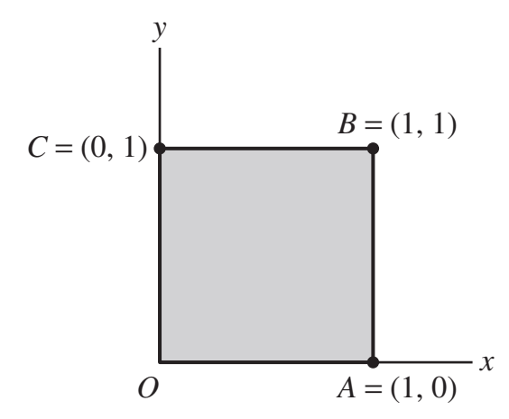
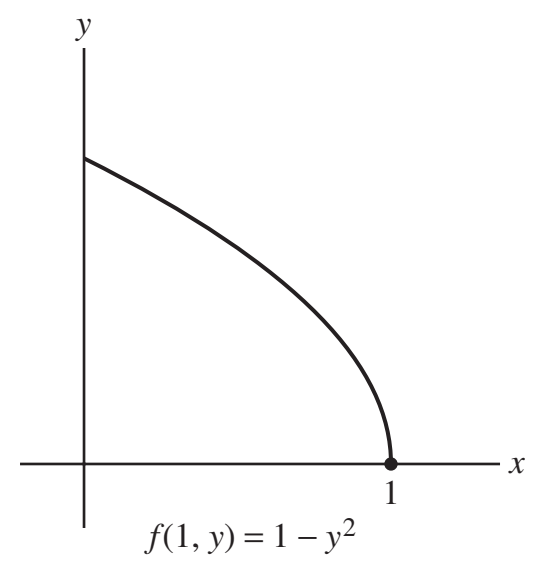
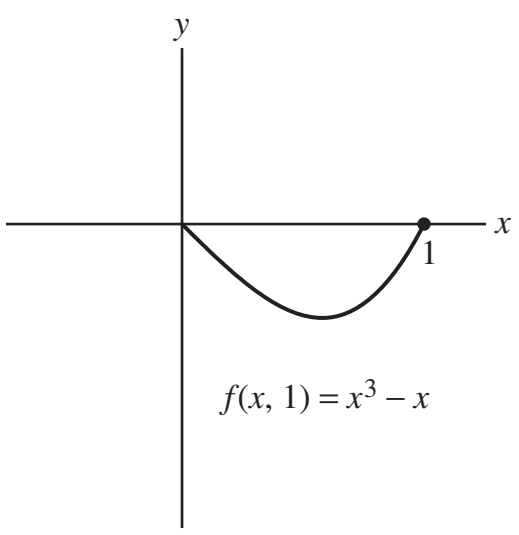
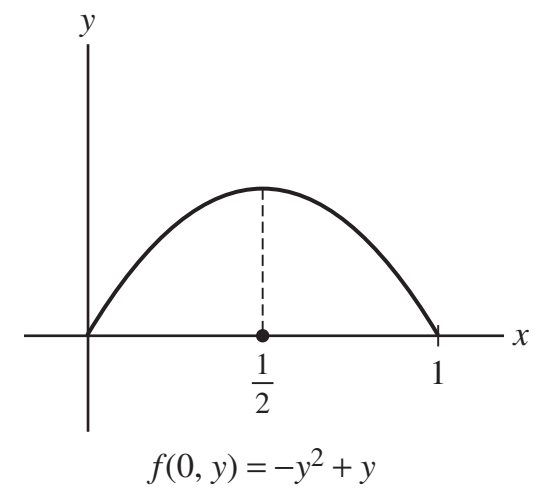
- 53Chapter 4Find the global extrema of \( f(x, y) = 2xy - x - y \) on the domain \(\{y \leq 4, y \geq x^2\}\).
Solution to exercise 53
The region is shown in the figure.Step 1. Finding the critical points. We find the critical points in the interior of the domain by setting the partial derivatives equal to zero and solving. We get \[ f_x = 2y - 1 = 0 \] \[ f_y = 2x - 1 = 0 \quad \Rightarrow \quad x = \frac{1}{2}, \quad y = \frac{1}{2} \] The critical point is \(\left( \frac{1}{2}, \frac{1}{2} \right)\). (It lies in the interior of the domain since \(\frac{1}{2} < 4\) and \(\frac{1}{2} > \left( \frac{1}{2} \right)^2\)). Step 2. Finding the global extrema on the boundary. We consider the two parts of the boundary separately. The parabola \(y = x^2\), \(-2 \leq x \leq 2\):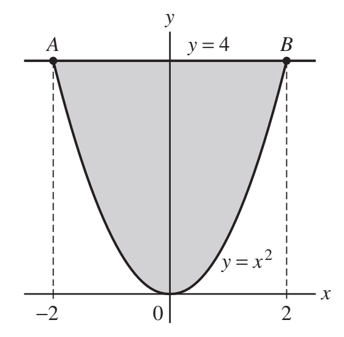
On this curve, \(f(x,x^2)=2 \cdot x \cdot x^2 - x - x^2 = 2x^3 - x^2 - x\). Using calculus in one variable or the graph of the function, we see that the minimum of \(f(x, x^2)\) on the interval occurs at \(x = -2\) and the maximum at \(x = 2\). The corresponding points are \((-2, 4)\) and \((2, 4)\). The segment \(\overline{AB}\): On this segment \(y = 4\), \(-2 \leq x \leq 2\), hence \(f(x, 4) = 2 \cdot x \cdot 4 - x - 4 = 7x - 4\) The maximum value occurs at \(x = 2\) and the minimum value at \(x = -2\). The corresponding points on the segment \(\overline{AB}\) are \((-2, 4)\) and \((2, 4)\). Step 3. Conclusions. Since the global extrema occur either at critical points in the interior of the domain or on the boundary of the domain, the candidates for global extrema are the following points: \[ \left( \frac{1}{2}, \frac{1}{2} \right), \quad (-2, 4), \quad (2, 4) \] We compute the values of \(f = 2xy - x - y\) at these points: \[ f\left( \frac{1}{2}, \frac{1}{2} \right) = 2 \cdot \frac{1}{2} \cdot \frac{1}{2} - \frac{1}{2} - \frac{1}{2} = -\frac{1}{2} \] \[ f(-2, 4) = 2 \cdot (-2) \cdot 4 - (-2) - 4 = -18 \] \[ f(2, 4) = 2 \cdot 2 \cdot 4 - 2 - 4 = 10 \] We conclude that the global maximum is \(f(2, 4) = 10\) and the global minimum is \(f(-2, 4) = -18\).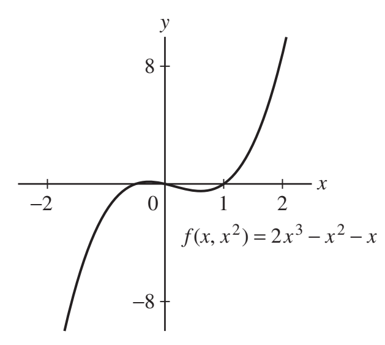
To make the boundary check complete, the derivative along \(y=x^2\) is \(6x^2-2x-1\); its interior zeros are \(x=(1\pm\sqrt7)/6\). Their values do not exceed the endpoint extrema.
Lagrange multipliers
54–63- 54Chapter 4Find the maximum of \( f(x, y, z) = xyz \) subject to the constraint \( g(x, y, z) = 2x + y + 4z = 1 \).
Solution to exercise 54
Solution Step 1. Write out the Lagrange Equations. We have \(\nabla f = \langle yz, xz, xy \rangle\) and \(\nabla g = (2, 1, 4)\), hence the Lagrange Condition \(\nabla f = \lambda \nabla g\) is \[ \langle yz, xz, xy \rangle = \lambda (2, 1, 4) \] or \[ yz = 2\lambda, \quad xz = \lambda, \quad xy = 4\lambda \] Step 2. Solve for \(\lambda\) in terms of \(x\), \(y\), and \(z\). The Lagrange equations imply that \[ \lambda = \frac{yz}{2}, \quad \lambda = xz, \quad \lambda = \frac{xy}{4} \] Step 3. Solve for \(x\), \(y\), and \(z\) using the constraint. Equating the expressions for \(\lambda\) gives the following equations: \[ \frac{yz}{2} = xz \quad \Rightarrow \quad z(2x - y) = 0 \] \[ \frac{xy}{4} = xz \quad \Rightarrow \quad x(4z - y) = 0 \] The first equation implies that \(z = 0\) or \(y = 2x\). The second equation implies that \(x = 0\) or \(y = 4z\). We examine all possible solutions. (1) \(z = 0\) and \(x = 0\): Then substituting in the constraint \(2x + y + 4z = 1\) gives \(2 \cdot 0 + y + 4 \cdot 0 = 1\), or \(y = 1\). We obtain the point \((0, 1, 0)\). (2) \(z = 0\) and \(y = 4z\): Then \(y = 4 \cdot 0 = 0\). Substituting \(z = 0\) and \(y=0\) in the constraint \(2x + y + 4z = 1\) gives \(2x+0+4 \cdot 0=1\) or \(x = \frac{1}{2}\). The corresponding point is \((\frac{1}{2}, 0,0)\). (3) \(y = 2x\) and \(x = 0\): Then \(y = 2 \cdot 0 = 0\). Substituting \(x = y = 0\) in the constraint \(2x + y + 4z = 1\) gives \(2 \cdot 0 + 0 + 4z = 1\) or \(z = \frac{1}{4}\). The corresponding point is \((0, 0, \frac{1}{4})\). (4) \(y = 2x\), \(y = 4z\): Then \(x = \frac{y}{2}\) and \(z = \frac{y}{4}\). We substitute in the constraint \(2x + y + 4z = 1\) and solve for \(y\): \[ 2 \cdot \frac{y}{2} + y + 4 \cdot \frac{y}{4} = 1 \] \[ 3y = 1 \quad \Rightarrow \quad y = \frac{1}{3} \] Hence, \(x = \frac{y}{2} = \frac{1}{6}\), \(z = \frac{y}{4} = \frac{1}{12}\). We obtain the point \(\left( \frac{1}{6}, \frac{1}{3}, \frac{1}{12} \right)\). Step 4. Conclusions. We evaluate \(f(x, y, z) = xyz\) at the critical points: \[ f(0, 1, 0) = 0 \cdot 1 \cdot 0 = 0 \] \[ f\left( \frac{1}{2}, 0, 0 \right) = \frac{1}{2} \cdot 0 \cdot 0 = 0 \] \[ f\left( \frac{1}{6}, \frac{1}{3}, \frac{1}{12} \right) = \frac{1}{6} \cdot \frac{1}{3} \cdot \frac{1}{12} = \frac{1}{216} \] \[ f\left( 0, 0, \frac{1}{4} \right) = 0 \cdot 0 \cdot \frac{1}{4} = 0 \] We conclude that the local maximum of \(f\) subject to the constraint is \[ f\left( \frac{1}{6}, \frac{1}{3}, \frac{1}{12} \right) = \frac{1}{216}. \] Notice that \(f\) does not have a global maximum on the plane \(2x + y + 4z = 1\) since, for all \(t\), the point \((-t^2, 1 + 6t^2, -t^2)\) is on the plane and we have \[ \lim_{t \to \infty} f(-t^2, 1 + 6t^2, -t^2) = \lim_{t \to \infty} t^4 \left( 1 + 6t^2 \right) = \infty \] - 55Chapter 4Use Lagrange multipliers to find the minimum and maximum values of \( f(x, y) = 3x - 2y\) on the circle \( x^2 + y^2 = 4 \).
Solution to exercise 55
Solution Step 1. Write out the Lagrange Equations. The constraint curve is \(g(x, y) = x^2 + y^2 - 4 = 0\), hence \(\nabla g = (2x, 2y)\) and \(\nabla f = (3, -2)\). The Lagrange Condition \(\nabla f = \lambda \nabla g\) is thus \((3, -2) = \lambda (2x, 2y)\). That is, \[ 3 = \lambda \cdot 2x \] \[ -2 = \lambda \cdot 2y \] Note that \(\lambda \neq 0\). Step 2. Solve for \(x\) and \(y\) using the constraint. The Lagrange equations give \[ 3 = \lambda \cdot 2x \quad \Rightarrow \quad x = \frac{3}{2\lambda} \] \[ -2 = \lambda \cdot 2y \quad \Rightarrow \quad y = -\frac{1}{\lambda} \] We substitute \(x\) and \(y\) in the equation of the constraint and solve for \(\lambda\). We get \[ \left( \frac{3}{2\lambda} \right)^2 + \left( -\frac{1}{\lambda} \right)^2 = 4 \] \[ \frac{9}{4\lambda^2} + \frac{1}{\lambda^2} = 4 \] \[ \frac{1}{\lambda^2} \cdot \frac{13}{4} = 4 \quad \Rightarrow \quad \lambda = \frac{\sqrt{13}}{4} \quad \text{or} \quad \lambda = -\frac{\sqrt{13}}{4} \] Substituting in (1), we obtain the points \[ x = \frac{6}{\sqrt{13}}, \quad y = -\frac{4}{\sqrt{13}} \] \[ x = -\frac{6}{\sqrt{13}}, \quad y = \frac{4}{\sqrt{13}} \] The critical points are thus \[ P_1 = \left( \frac{6}{\sqrt{13}}, -\frac{4}{\sqrt{13}} \right), \quad P_2 = \left( -\frac{6}{\sqrt{13}}, \frac{4}{\sqrt{13}} \right) \] Step 3. Calculate the value at the critical points. We find the value of \(f(x, y) = 3x - 2y\) at the critical points: \[ f(P_1) = 3 \cdot \frac{6}{\sqrt{13}} - 2 \cdot -\frac{4}{\sqrt{13}} = \frac{26}{\sqrt{13}} \] \[ f(P_2) = 3 \cdot -\frac{6}{\sqrt{13}} - 2 \cdot \frac{4}{\sqrt{13}} = \frac{-26}{\sqrt{13}} \] Thus, the maximum value of \(f\) on the circle is \(\frac{26}{\sqrt{13}}\), and the minimum is \(\frac{-26}{\sqrt{13}}\). - 56Chapter 4Find the minimum value of \( f(x,y) =xy \) subject to the constraint \( 5x-y=4\) in two ways: using Lagrange multipliers and setting \(y=5x-4\) in \(f(x,y)\).
Solution to exercise 56
Solution We find the minimum value of \(f(x, y) = xy\) subject to the constraint \(g(x, y) = 5x - y - 4 = 0\) using the Lagrange multipliers. Step 1. Write out the Lagrange Equations. The gradient vectors are \(\nabla f = \langle y, x \rangle\) and \(\nabla g = (5, -1)\), hence the Lagrange Condition \(\nabla f = \lambda \nabla g\) is \[ \langle y, x \rangle = \lambda \langle 5, -1 \rangle \] The Lagrange Equations are thus \[ y = 5\lambda, \quad x = -\lambda \] Step 2. Solve for \(x\) and \(y\) using the constraint. Equating the two expressions for \(\lambda\) gives \[ \lambda = \frac{y}{5} \quad \text{and} \quad \lambda = -x \] Thus, \(y = -5x\). We substitute \(y = -5x\) in the equation of the constraint \(5x - y = 4\) and solve for \(x\). This gives \[ 5x - (-5x) = 4 \quad \Rightarrow \quad 10x = 4 \quad \Rightarrow \quad x = \frac{2}{5} \] The \(y\)-coordinate is \(y = -5 \cdot \frac{2}{5} = -2\). We obtain the critical point \(\left( \frac{2}{5}, -2 \right)\). Step 3. Calculate the value at the critical point. The value of \(f(x, y) = xy\) at the critical point is \[ f\left( \frac{2}{5}, -2 \right) = \frac{2}{5} \cdot (-2) = -\frac{4}{5} \] This value is the minimum value of \(f\) subject to the constraint:Note that since \(f(x, y) = xy\) is positive in the first and third quadrants, the minimum value of \(f\) subject to the constraint’s part in the fourth quadrant is also the minimum value subject to the entire constraint. The part of the constraint in the fourth quadrant is a closed and bounded segment, hence the minimum value of \(f\) on this segment exists, and is given in (1). We now find the minimum value of \(f(x, y) = xy\) subject to the constraint \(5x - y = 4\) using the second way. On the constraint \(5x - y = 4\), we have \(y = 5x - 4\). We substitute in the function \(f(x, y) = xy\) and then find the minimum of the resulting one-variable function. We get \[ g(x) = f(x, 5x - 4) = x(5x - 4) = 5x^2 - 4x \] We now find the minimum value of \(g(x) = 5x^2 - 4x\) in the interval \(-\infty < x < \infty\). We find the critical points: \[ g'(x) = 10x - 4 = 0 \quad \Rightarrow \quad x = \frac{2}{5} \] The limits \[ \lim_{x \to \infty} g(x) = \lim_{x \to \infty} (5x^2 - 4x) = \infty \quad \text{and} \quad \lim_{x \to -\infty} g(x) = \lim_{x \to -\infty} (5x^2 - 4x) = \infty \] imply that \(g\) has a minimum value for \(-\infty < x < \infty\), and it occurs at the critical point. Therefore, the minimum value of \(g\) occurs at \(x = \frac{2}{5}\). The corresponding \(y\)-coordinate is \(y = 5 \cdot \frac{2}{5} - 4 = -2\), therefore the minimum value of \(f(x, y) = xy\) is \[ f\left( \frac{2}{5}, -2 \right) = \frac{2}{5} \cdot (-2) = -\frac{4}{5} \]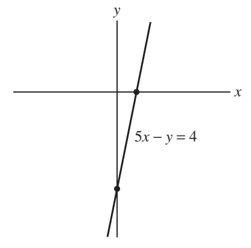
- 57Chapter 4Find the minimum and maximum values of \( f(x, y) = x^2y \) on the ellipse \( 4x^2 + 9y^2 = 36 \).
Solution to exercise 57
We must find the minimum and maximum values of \(f(x, y) = x^2 y\) subject to the constraint \(g(x, y) = 4x^2 + 9y^2 - 36 = 0\). Step 1. Write out the Lagrange Equations. The gradient vectors are \(\nabla f = \langle 2xy, x^2 \rangle\) and \(\nabla g = (8x, 18y)\), hence the Lagrange Condition \(\nabla f = \lambda \nabla g\) gives \[ \langle 2xy, x^2 \rangle = \lambda \langle 8x, 18y \rangle \quad \Rightarrow \quad (8\lambda x, 18\lambda y) \] We obtain the following Lagrange Equations: \[ 2xy = 8\lambda x \quad \Rightarrow \quad y = 4\lambda \] \[ x^2 = 18\lambda y \] Step 2. Solve for \(\lambda\) in terms of \(x\) and \(y\). If \(x = 0\), the equation of the constraint implies that \(y = \pm 2\). The points \((0, 2)\) and \((0, -2)\) satisfy the Lagrange Equations for \(\lambda = 0\). If \(x \neq 0\), the second Lagrange Equation implies that \(y \neq 0\). Therefore, the Lagrange Equations give \[ 2xy = 8\lambda x \quad \Rightarrow \quad \lambda = \frac{y}{4} \] \[ x^2 = 18\lambda y \quad \Rightarrow \quad \lambda = \frac{x^2}{18y} \] Step 3. Solve for \(x\) and \(y\) using the constraint. We equate the two expressions for \(\lambda\) to obtain \[ \frac{y}{4} = \frac{x^2}{18y} \quad \Rightarrow \quad 18y^2 = 4x^2 \] We now substitute \(4x^2 + 9y^2 = 36\) in the equation of the constraint \(4x^2 + 9y^2 = 36\) and solve for \(y\). This gives \[ 18y^2 + 9y^2 = 36 \quad \Rightarrow \quad y^2 = \frac{36}{27} \quad \Rightarrow \quad y_1 = \frac{2}{\sqrt{3}}, \quad y_2 = -\frac{2}{\sqrt{3}} \] We find the \(x\)-coordinates using \(x^2 = \frac{9y^2}{2}\): \[ x^2 = \frac{9}{2} \cdot \frac{4}{3} = 6 \quad \Rightarrow \quad x_1 = \sqrt{6}, \quad x_2 = -\sqrt{6} \] We obtain the following critical points: \[ P_1 = (0, 2), \quad P_2 = (0, -2), \quad P_3 = \left( \sqrt{6}, \frac{2}{\sqrt{3}} \right) \] \[ P_4 = \left( \sqrt{6}, -\frac{2}{\sqrt{3}} \right), \quad P_5 = \left( -\sqrt{6}, \frac{2}{\sqrt{3}} \right), \quad P_6 = \left( -\sqrt{6}, -\frac{2}{\sqrt{3}} \right) \] Step 4. Conclusions. We evaluate the function \(f(x, y) = x^2 y\) at the critical points: \[ f(P_1) = 0^2 \cdot 2 = 0 \] \[ f(P_2) = 0^2 \cdot (-2) = 0 \] \[ f(P_3) = f(P_5) = 6 \cdot \frac{2}{\sqrt{3}} = \frac{12}{\sqrt{3}} \] \[ f(P_4) = f(P_6) = 6 \cdot \left( -\frac{2}{\sqrt{3}} \right) = -\frac{12}{\sqrt{3}} \] Since the min and max of \(f\) occur on the ellipse, it must occur at critical points. Thus, we conclude that the maximum and minimum of \(f\) subject to the constraint are \(\frac{12}{\sqrt{3}}\) and \(-\frac{12}{\sqrt{3}}\) respectively. - 58Chapter 4Find the point in the first quadrant on the curve \( y = x + x^{-1} \) closest to the origin.
Solution to exercise 58
We need to minimize the distance \(d = \sqrt{x^2 + y^2}\) subject to the constraint \(g(x, y) = x + \frac{1}{x} - y = 0\). Since the function \(u^2\) is increasing for \(u \geq 0\), the distance \(d\) is minimal where the square \(d^2\) is minimal. Therefore, we minimize the function \(f(x, y) = d^2 = x^2 + y^2\) subject to the constraint. Step 1. Write out the Lagrange Equations. The gradient vectors are \(\nabla f = \langle 2x, 2y \rangle\) and \(\nabla g = \left\langle 1 - \frac{1}{x^2}, -1 \right\rangle\), hence the Lagrange Condition \(\nabla f = \lambda \nabla g\) gives \[ \langle 2x, 2y \rangle = \lambda \left\langle 1 - \frac{1}{x^2}, -1 \right\rangle \] The Lagrange Equations are \[ 2x = \lambda \left( 1 - \frac{1}{x^2} \right) \] \[ 2y = -\lambda \] Step 2. Solve for \(\lambda\) in terms of \(x\) and \(y\). The second Lagrange equation gives \(\lambda = -2y\), and the first equation gives \[ 2x = \lambda \frac{x^2 - 1}{x^2} \quad \Rightarrow \quad \lambda = \frac{2x^3}{x^2 - 1} \] Step 3. Solve for \(x\) and \(y\) using the constraint. Equating the two expressions for \(\lambda\), we get \[ -2y = \frac{2x^3}{x^2 - 1} \quad \Rightarrow \quad y = \frac{x^3}{1 - x^2} \] We now substitute \(y\) as a function of \(x\) in the equation of the constraint and solve for \(x\). This gives \[ \frac{x^3}{1 - x^2} = x + \frac{1}{x} = \frac{x^2 + 1}{x} \] \[ x^4 = \left( 1 - x^2 \right)\left( 1 + x^2 \right) = 1 - x^4 \] \[ 2x^4 = 1 \quad \Rightarrow \quad x = 2^{-1/4}, \quad x = -2^{-1/4} \] The solution in the first quadrant is \(x = 2^{-1/4} = \frac{1}{\sqrt[4]{2}}\). We find the \(y\)-coordinate using \(y = \frac{x^3}{1 - x^2}\): \[ y = \frac{2^{-3/4}}{1 - 2^{-1/2}} = \frac{2^{-1/4}}{2^{1/2} - 1} = 2^{-1/4} \left( 2^{1/2} + 1 \right) = 2^{1/4} + 2^{-1/4} = \frac{\sqrt{2}}{\sqrt[4]{2}} + \frac{1}{\sqrt[4]{2}} \] We obtain the critical point: \[ P = \left( \frac{1}{\sqrt[4]{2}}, \frac{\sqrt{2}}{\sqrt[4]{2}} + \frac{1}{\sqrt[4]{2}} \right) \] Step 4. Conclusion.It is clear from the graph of \(y = x + \frac{1}{x}\) that the critical point is a minimum. Therefore, the point \(P\) is the closest to the origin on the curve \(y = x + \frac{1}{x}\) in the first quadrant.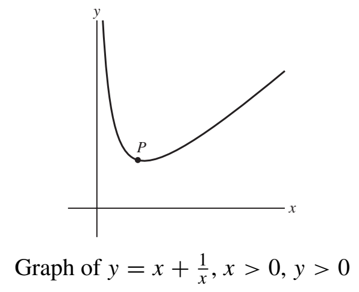
- 59Chapter 4Find the extreme values of \( f(x, y, z) = x + 2y + 3z \) subject to the two constraints \( x + y + z = 1 \) and \( x^2 + y^2 + z^2 = 1 \).
Solution to exercise 59
Write \((x,y,z)=\mathbf c+\mathbf w\), where \(\mathbf c=(1/3,1/3,1/3)\), \(\mathbf w\cdot(1,1,1)=0\), and \(\|\mathbf w\|=\sqrt{2/3}\). Then
\[ x+2y+3z=2+(-1,0,1)\cdot\mathbf w. \]By Cauchy–Schwarz, the second term ranges from \(-2/\sqrt3\) to \(2/\sqrt3\). Thus
\[ \boxed{f_{\min}=2-\frac2{\sqrt3},\quad f_{\max}=2+\frac2{\sqrt3}.} \]\[ P_{\min}=\left(\frac13+\frac1{\sqrt3},\frac13,\frac13-\frac1{\sqrt3}\right),\quad P_{\max}=\left(\frac13-\frac1{\sqrt3},\frac13,\frac13+\frac1{\sqrt3}\right). \] - 60Chapter 4Find the minimum and maximum values of \( f(x, y, z) = x - z \) on the intersection of the cylinders \( x^2 + y^2 = 1 \) and \( x^2 + z^2 = 1 \) (Figure 5).
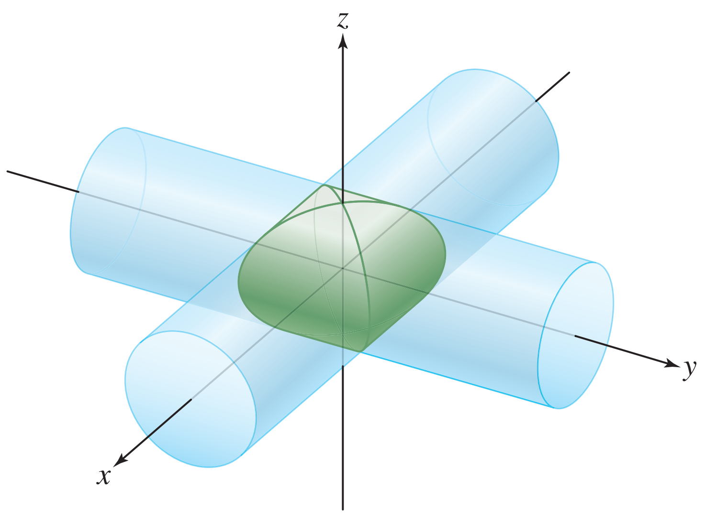
Figure 5 Solution to exercise 60
Let us use the Lagrange Multipliers method with two constraints for \( f(x, y, z) = x - z \) subject to \( g(x, y, z) = x^2 + y^2 - 1 = 0 \) and \( h(x, y, z) = x^2 + z^2 - 1 = 0 \).
The Lagrange condition would be \( \nabla f = \lambda \nabla g + \mu \nabla h \).
Noting here that we have \( \nabla f = (1, 0, -1) \), \( \nabla g = (2x, 2y, 0) \), and \( \nabla h = (2x, 0, 2z) \). Therefore we have: \[ (1, 0, -1) = \lambda (2x, 2y, 0) + \mu (2x, 0, 2z) \] yielding the equations: \[ 1 = 2\lambda x + 2\mu x, \quad 0 = 2\lambda y, \quad -1 = 2\mu z \] Next, using the second equation, we find either \( \lambda = 0 \) or \( y = 0 \). If \( y = 0 \), then using the first constraint equation, \( x = \pm 1 \), and using the second constraint equation we find \( z = 0 \). The derived critical points are then: \[ (1, 0, 0), \quad (-1, 0, 0) \] If \( \lambda = 0 \), then using the first equation above we see \( 1 = 2\mu x \) which implies \[ \mu = \frac{1}{2x} \] Using the last equation above we have: \[ -1 = 2 \cdot \frac{1}{2x} z \quad \Rightarrow \quad -x = z \] Then using the second constraint equation, we have: \[ 2x^2 = 1 \quad \Rightarrow \quad x = \pm \frac{1}{\sqrt{2}}, \quad z = \pm \frac{1}{\sqrt{2}} \] Using the first constraint equation, we have: \[ x^2 + y^2 = 1 \quad \Rightarrow \quad y^2 = \frac{1}{2} \quad \Rightarrow \quad y = \pm \frac{1}{\sqrt{2}} \] We have four derived critical points here: \[ \left( \frac{1}{\sqrt{2}}, \frac{1}{\sqrt{2}}, -\frac{1}{\sqrt{2}} \right), \quad \left( \frac{1}{\sqrt{2}}, -\frac{1}{\sqrt{2}}, -\frac{1}{\sqrt{2}} \right), \quad \left( -\frac{1}{\sqrt{2}}, \frac{1}{\sqrt{2}}, \frac{1}{\sqrt{2}} \right), \quad \left( -\frac{1}{\sqrt{2}}, -\frac{1}{\sqrt{2}}, \frac{1}{\sqrt{2}} \right) \] Now to analyze \( f(x, y, z) = x - z \) for maximum and minimum values: \[ f(1, 0, 0) = 1, \quad f(-1, 0, 0) = -1 \] \[ f\left( \frac{1}{\sqrt{2}}, \frac{1}{\sqrt{2}}, -\frac{1}{\sqrt{2}} \right) = \sqrt{2}, \quad f\left( \frac{1}{\sqrt{2}}, -\frac{1}{\sqrt{2}}, -\frac{1}{\sqrt{2}} \right) = \sqrt{2} \] \[ f\left( -\frac{1}{\sqrt{2}}, \frac{1}{\sqrt{2}}, \frac{1}{\sqrt{2}} \right) = -\sqrt{2}, \quad f\left( -\frac{1}{\sqrt{2}}, -\frac{1}{\sqrt{2}}, \frac{1}{\sqrt{2}} \right) = -\sqrt{2} \] Hence the maximum value of \( f(x, y, z) = x - z \) subject to the two constraints is \( \sqrt{2} \), while the minimum value is \( -\sqrt{2} \). - 61Chapter 4Use Lagrange multipliers to find the dimensions of a cylindrical can with a bottom but no top, of fixed volume \( V \) with minimum surface area.
Solution to exercise 61
We denote the radius of the cylinder by \( r \) and the height by \( h \).
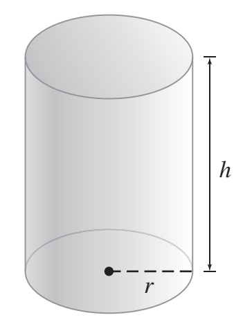
The volume of the cylinder is \(\pi r^2 h\) and the surface area is \(f = 2\pi r h + \pi r^2\). We need to minimize \( f(r, h) = 2\pi r h + \pi r^2 \) subject to the constraint \( g(r, h) = \pi r^2 h - V = 0 \). Step 1. Write out the Lagrange Equations. We have \( \nabla f = (2\pi h + 2\pi r, 2\pi r) \) and \( \nabla g = \pi \langle 2hr, r^2 \rangle \), hence the Lagrange Condition \( \nabla f = \lambda \nabla g \) is \[ \pi \langle 2h + 2r, 2r \rangle = \pi \lambda \langle 2hr, r^2 \rangle \] or \[ \langle 2h + 2r, 2r \rangle = \lambda \langle 2hr, r^2 \rangle \] We obtain the following equations: \[ 2(h + r) = 2hr \lambda \quad \Rightarrow \quad h + r = hr \lambda \] \[ 2r = \lambda r^2 \quad \Rightarrow \quad 2r = \lambda r^2 \] Step 2. Solve for \( \lambda \) in terms of \( r \) and \( h \). The equation of the constraint implies that \( r \neq 0 \) and \( h \neq 0 \) (we assume that \( V > 0 \)). Therefore, the Lagrange equations give \[ \lambda = \frac{h + r}{hr} = \frac{1}{r} + \frac{1}{h}, \quad \lambda = \frac{2}{r} \] Step 3. Solve for \( r \) and \( h \) using the constraint. Equating the two expressions for \( \lambda \) gives \[ \frac{1}{r} + \frac{1}{h} = \frac{2}{r} \quad \Rightarrow \quad \frac{1}{h} = \frac{1}{r} \quad \Rightarrow \quad h = r \] We substitute \( h = r \) in the equation of the constraint \( \pi r^2 h = V \) and solve for \( r \). We obtain \[ \pi r^3 = V \quad \Rightarrow \quad r = \left( \frac{V}{\pi} \right)^{1/3} \] We find \( h \) using the relation \( h = r \): \[ h = \left( \frac{V}{\pi} \right)^{1/3} \] The critical point is \( h = \left( \frac{V}{\pi} \right)^{1/3}, \quad r = \left( \frac{V}{\pi} \right)^{1/3} \). Step 4. Conclusions. On the constraint \( \pi r^2 h = V \) we have \( h = \frac{V}{\pi r^2} \) and \( r = \sqrt{\frac{V}{\pi h}} \), hence \[ f \left( r, \frac{V}{\pi r^2} \right) = 2\pi r \cdot \frac{V}{\pi r^2} + \pi r^2 = \frac{2V}{r} + \pi r^2 \] \[ f \left( \sqrt{\frac{V}{\pi h}}, h \right) = 2\pi \sqrt{\frac{V}{\pi h}} h + \pi \cdot \frac{V}{\pi h} = 2\sqrt{\pi V} \sqrt{h} + \frac{V}{h} \] We see that as \( h \to 0^+ \) or \( h \to \infty \), we have \( f(r, h) \to \infty \), and as \( r \to 0^+ \) or \( r \to \infty \), we have \( f(r, h) \to \infty \). Therefore, \( f \) has a minimum value on the constraint, which occurs at the critical point. We evaluate \( f(r, h) = 2\pi r h + \pi r^2 \) at the critical point \( P \): \[ f(P) = 2\pi \left( \frac{V}{\pi} \right)^{1/3} \left( \frac{V}{\pi} \right)^{1/3} + \pi \left( \frac{V}{\pi} \right)^{2/3} = 3\pi \left( \frac{V}{\pi} \right)^{2/3} \] We conclude that the minimum surface area is \( 3\pi \left( \frac{V}{\pi} \right)^{2/3} \), and the dimensions of the corresponding cylinder are \( r = h = \left( \frac{V}{\pi} \right)^{1/3} \). - 62Chapter 4Find the dimensions of the box of maximum volume with its sides parallel to the coordinate planes that can be inscribed in the ellipsoid (Figure 6) \[ \left(\frac{x}{a}\right)^2 + \left(\frac{y}{b}\right)^2 + \left(\frac{z}{c}\right)^2 = 1 \]
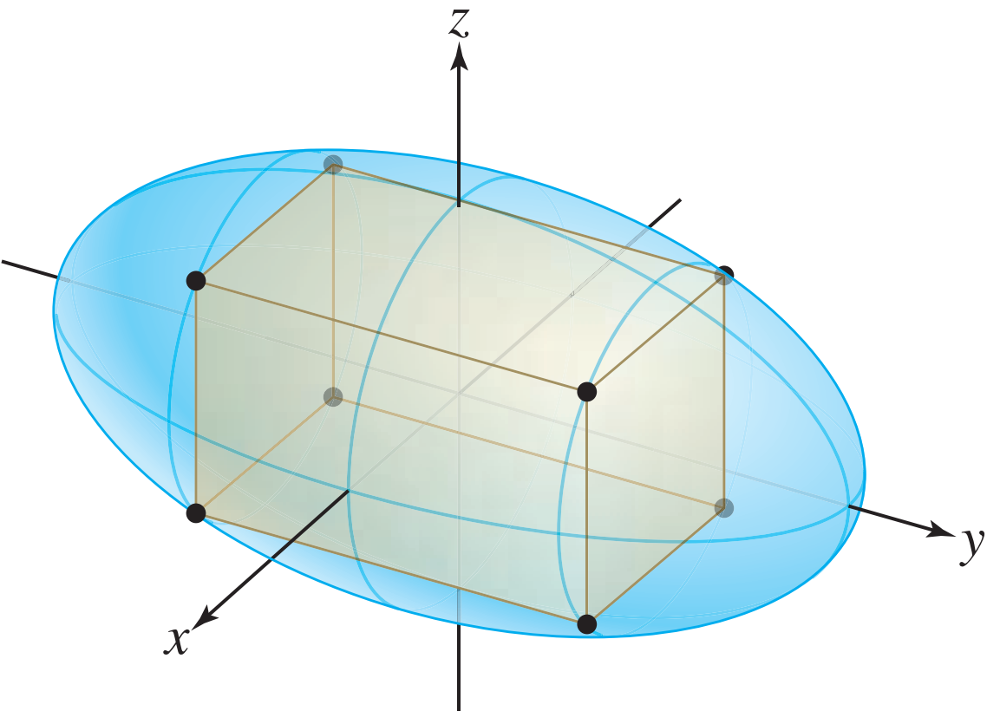
Figure 6 Solution to exercise 62
We denote the vertices of the box by \( (\pm x, \pm y, \pm z) \), where \( x \geq 0, y \geq 0, z \geq 0 \). The volume of the box is \[ V(x, y, z) = 8xyz \] The vertices of the box must satisfy the equation of the ellipsoid, hence, \[ g(x, y, z) = \frac{x^2}{a^2} + \frac{y^2}{b^2} + \frac{z^2}{c^2} - 1 = 0, \quad x \geq 0, \quad y \geq 0, \quad z \geq 0. \] We need to maximize \( V \) subject to the constraint: \( g(x, y, z) = 0, \ x \geq 0, \ y \geq 0, \ z \geq 0 \). Step 1. Write out the Lagrange Equations. We have \( \nabla V = 8 \langle yz, xz, xy \rangle \) and \( \nabla g = \left\langle \frac{2x}{a^2}, \frac{2y}{b^2}, \frac{2z}{c^2} \right\rangle \), hence the Lagrange Condition \( \nabla V = \lambda \nabla g \) gives the following equations: \[ yz = \lambda \frac{2x}{a^2} \] \[ xz = \lambda \frac{2y}{b^2} \] \[ xy = \lambda \frac{2z}{c^2} \] Step 2. Solve for \( \lambda \) in terms of \( x, y, \) and \( z \). If \( x = 0 \), \( y = 0 \), or \( z = 0 \), the volume of the box has the minimum value zero. We thus may assume that \( x \neq 0, y \neq 0, \) and \( z \neq 0 \). The Lagrange equations give \[ \lambda = \frac{a^2 yz}{2x}, \quad \lambda = \frac{b^2 xz}{2y}, \quad \lambda = \frac{c^2 xy}{2z} \] Step 3. Solve for \( x, y, \) and \( z \) using the constraint. Equating the three expressions for \( \lambda \) yields the following equations: \[ \frac{a^2 yz}{2x} = \frac{c^2 xy}{2z} \quad \Rightarrow \quad y \left( c^2 x^2 - a^2 z^2 \right) = 0 \] \[ \frac{b^2 xz}{2y} = \frac{c^2 xy}{2z} \quad \Rightarrow \quad x \left( c^2 y^2 - b^2 z^2 \right) = 0 \] Since \( x > 0 \) and \( y > 0 \), these equations imply that \[ c^2 x^2 - a^2 z^2 = 0 \quad \Rightarrow \quad x = \frac{az}{c} \] \[ c^2 y^2 - b^2 z^2 = 0 \quad \Rightarrow \quad y = \frac{bz}{c} \] We now substitute \( x \) and \( y \) in the equation of the constraint and solve for \( z \). This gives \[ \frac{\left( \frac{az}{c} \right)^2}{a^2} + \frac{\left( \frac{bz}{c} \right)^2}{b^2} + \frac{z^2}{c^2} = 1 \] \[ \frac{z^2}{c^2} + \frac{z^2}{c^2} + \frac{z^2}{c^2} = 1 \] \[ \frac{3z^2}{c^2} = 1 \quad \Rightarrow \quad z = \frac{c}{\sqrt{3}} \] We find \( x \) and \( y \) using (1): \[ x = \frac{a}{c} \cdot \frac{c}{\sqrt{3}} = \frac{a}{\sqrt{3}}, \quad y = \frac{b}{c} \cdot \frac{c}{\sqrt{3}} = \frac{b}{\sqrt{3}} \] We obtain the critical point: \[ P = \left( \frac{a}{\sqrt{3}}, \frac{b}{\sqrt{3}}, \frac{c}{\sqrt{3}} \right) \] Step 4. Conclusions. The function \( V = 8xyz \) is a polynomial, hence it is continuous. The constraint defines a closed and compact set in \( \mathbb{R}^3 \), hence \( f \) has extreme values on the constraint. The maximum value is obtained at the critical point \( P \). We find it: \[ V(P) = 8 \cdot \frac{a}{\sqrt{3}} \cdot \frac{b}{\sqrt{3}} \cdot \frac{c}{\sqrt{3}} = 8 \cdot \frac{abc}{3\sqrt{3}} = \frac{8abc}{3\sqrt{3}} \] We conclude that the dimensions of the box of maximum volume with sides parallel to the coordinate planes, which can be inscribed in the ellipsoid, are \[ x = \frac{a}{\sqrt{3}}, \quad y = \frac{b}{\sqrt{3}}, \quad z = \frac{c}{\sqrt{3}}. \]\[ \boxed{\text{Full side lengths: }\frac{2a}{\sqrt3},\ \frac{2b}{\sqrt3},\ \frac{2c}{\sqrt3}.} \]The coordinates above are half the corresponding side lengths.
- 63Chapter 4Given \( n \) nonzero numbers \( \sigma_1, \ldots, \sigma_n \), show that the minimum value of \[ f(x_1, \ldots, x_n) = x_1^2\sigma_1^2 + \ldots + x_n^2\sigma_n^2 \] subject to \( x_1 + \ldots + x_n = 1 \) is \( c \), where \( c \) is \[ c = \left( \sum_{j=1}^{n} \frac{1}{\sigma_j^2} \right)^{-1}. \]
Solution to exercise 63
We must minimize the function \( f(x_1, \dots, x_n) = x_1^2 \sigma_1^2 + \dots + x_n^2 \sigma_n^2 \) subject to the constraint
\( g(x_1, \dots, x_n) = x_1 + \dots + x_n - 1 = 0 \). First, write out the Lagrange Equations. We have \( \nabla f = \langle 2\sigma_1^2 x_1, \dots, 2\sigma_n^2 x_n \rangle \) and \( \nabla g = (1, \dots, 1) \), hence the Lagrange Condition \( \nabla f = \lambda \nabla g \) gives the following equations: \[ 2\sigma_1^2 x_1 = \lambda \] \[ 2\sigma_2^2 x_2 = \lambda \] \[ \vdots \] \[ 2\sigma_n^2 x_n = \lambda \] It follows from these equations that \( \sigma_j^2 x_j \) is independent of \( j \); call their common value \( c \). Then from the constraint, \[ 1 = x_1 + \dots + x_n = c \sigma_1^{-2} + c \sigma_2^{-2} + \dots + c \sigma_n^{-2} = c \sum_{j=1}^n \sigma_j^{-2} \] It follows that \[ c = \left( \sum_{j=1}^n \sigma_j^{-2} \right)^{-1} \] and that \[ (x_1, \dots, x_n) = \left( c \sigma_1^{-2}, \dots, c \sigma_n^{-2} \right). \] We must show that these values for the \( x_i \) produce a minimum for \( f \). As \( x_i \to \infty \) or \( x_i \to -\infty \), for one or more \( i \)'s the function \( f(x_1, \dots, x_n) \) tends to \( \infty \). \( f \) is continuous since it is a polynomial, hence \( f \) has a minimum value on the constraint. This minimum occurs at the critical point. We find it: \[ f(P) = \sum_{j=1}^n \sigma_j^2 \left( \frac{c}{\sigma_j^2} \right)^2 = \sum_{j=1}^n \frac{\sigma_j^2 c^2}{\sigma_j^4} = c^2 \sum_{j=1}^n \sigma_j^{-2} = c^2 \cdot c^{-1} = c \]